生成时间：2026-05-25T11:28:12+08:00
今日保留论文数：4
内容构成：今日新文 4 篇；补充推荐 0 篇；经典旧文精读 0 篇
高能天体物理重点
1. A Precise Measurement of the Fermi-LAT Galactic Center Excess Morphology and Spectrum
- 来源：arXiv / astro-ph.HE
- 链接：https://arxiv.org/abs/2605.22913v1
- 作者：Mattia Di Mauro
- 评分：novelty 9/10，importance 9/10，relevance 10/10，final 10.00/10
- 推荐理由：Fermi-LAT银河中心超额的形态和能谱精密重分析，系统处理IEM和源模型不确定性，并比较DM形态与bulge模板；直接命中GeV伽马射线、Fermi-LAT、GCE和暗物质解释，是本批最值得读的论文之一。
中文题目：对费米-LAT 银心伽马射线过剩形态和能谱的精确测量
做了什么：这篇文章重新分析费米-LAT 在银心方向的伽马射线数据，目标是把长期困扰银心过剩研究的星际弥散辐射和点源建模系统误差压低到可控水平。作者使用多步模板拟合、迭代源搜索和一组基于 GALPROP 的星际辐射模型，在以银心为中心的 \(40^\circ\times40^\circ\) 区域内把分数残差降到 \(\lesssim 10\%\)。结果显示，银心过剩的表面亮度更接近近似球对称的广义 NFW 模板，内斜率约为 \(\gamma\simeq 1.15\)，而核球和盒状核球模板不能完整解释径向形态。能谱仍在几 GeV 附近达到峰值，在几十 GeV 以上只给出很强的上限。
为什么重要：银心过剩是间接探测暗物质中最持久也最有争议的信号之一，但它也可能来自未分辨毫秒脉冲星、核球恒星族群、宇宙线注入或弥散辐射建模误差。这篇文章的重要性在于，它不只是再次报告一个过剩，而是把形态、能谱和系统误差一起重新量化：如果过剩确实更像球对称的 \(\rho^2\) 暗物质湮灭投影，而不像核球恒星分布，那么许多天体物理解释会受到更强约束。
理论 / 观测 / 仪器方法价值：对理论而言，文章给出了可直接用于暗物质湮灭模型、毫秒脉冲星族群模型和宇宙线传播模型比较的高精度形态与能谱约束。对观测而言，它展示了在强背景区域中如何通过多模型星际辐射模板、加权似然、平面遮罩和迭代源搜索降低系统误差。对方法而言，文章的价值在于把残差控制、模板退化和高能端上限放在同一个框架下讨论，使后续分析更容易复现和交叉检验。
为什么应该关注：如果你关心暗物质间接探测，这篇文章直接影响银心过剩是否仍是热 WIMP 候选信号的可信证据。如果你关心银河系高能天体物理，它也提供了关于内银河宇宙线、气体、逆康普顿辐射和未分辨源族群的严格压力测试。即使你不相信暗物质解释，这篇工作也值得看，因为它把“弥散背景没建好”这一常见反驳转化成可量化的模板、残差和稳健性问题。
展开详细解读：文章讲解、背景、理论、重点章节、图表与相关工作
文章详细讲解
科学问题：费米-LAT 自 2009 年以来在银心几度到十几度尺度上反复看到一个几 GeV 能段的伽马射线过剩，即所谓 Galactic Center Excess。关键争议不在于是否有残差，而在于残差的空间形态和能谱是否足够稳健：它究竟更像暗物质湮灭产生的近球对称 \(\rho^2\) 投影，还是更像银河核球中的未分辨毫秒脉冲星，或者只是星际弥散辐射模型、气体模板、逆康普顿分量和点源表不完备造成的假信号。本文要解决的是，在尽量降低内银河建模系统误差后，GCE 的形态和能谱还剩下什么。
作者怎么做：文章采用新的费米-LAT 数据分析流程，在以银心为中心的 \(40^\circ\times40^\circ\) 天区内进行多步拟合。核心做法包括：使用一组 GALPROP 生成的星际辐射模型作为弥散背景基线；对点源进行迭代搜索和重拟合，减少未建模源在残差图中投影成弥散结构的风险；在不同能段、不同天区遮罩、不同权重似然和不同模板组合下重复分析。作者特别比较了暗物质动机的广义 NFW 模板与核球追踪模板，即核球加盒状核球模型，在同时存在的情况下检验它们对径向亮度的解释力。
关键结果：新的拟合把大天区内的分数残差压到 \(\lesssim 10\%\)，这对银心这种背景极强、结构复杂的区域是实质改进。重建出的 GCE 表面亮度高度向心集中，并且可由近似球对称的广义 NFW 模板很好描述，内斜率为 \(\gamma\simeq 1.15\)。相比之下，核球追踪模板在若干角尺度上表现不佳，尤其在视线角 \(\theta\simeq 1^\circ\) 到 \(2^\circ\) 以及 \(\theta\gtrsim 8^\circ\) 处不能完整重现径向形态。即使在同时放入核球模板和暗物质模板的拟合中，暗物质形态分量仍保持高显著性。能谱方面，GCE 仍在几 GeV 附近有峰值，而在几十 GeV 到 TeV 端只得到上限，典型达到 \(E^2\Phi\lesssim 10^{-8}\,\mathrm{GeV\,cm^{-2}\,s^{-1}\,sr^{-1}}\)。
局限和下一步：这篇文章并不能直接证明暗物质，因为模板拟合的“形态偏好”仍依赖弥散辐射模型族、气体三维分布、宇宙线源分布、费米-LAT 有效面积和 PSF 建模，以及未分辨点源统计。核球模板失败也不等于所有毫秒脉冲星解释失败，因为真实源族群可能不严格追踪某个红外核球模板。下一步应把本文的形态和能谱约束与非泊松模板拟合、波形/小尺度涨落分析、MeerKAT 和 SKA 脉冲星搜索、CTA 高能上限、以及银河中心宇宙线传播三维模型结合起来，检验同一个源族群能否同时解释空间、能谱和小尺度统计性质。
背景知识
银心过剩指的是费米-LAT 数据在扣除已知点源、各向同性背景和银河弥散辐射后，在银河中心周围出现的额外 GeV 伽马射线辐射。它的典型能谱在几 GeV 附近凸起，空间上大致从银心向外延伸到十度量级。因为这个尺度正好对应银河内晕的暗物质密度平方投影，早期很多工作把它与质量为几十 GeV、湮灭到 \(b\bar b\) 等末态的热遗迹暗物质联系起来。
历史上，GCE 的最大困难不是统计误差，而是系统误差。银心区域同时有强烈的 \(\pi^0\) 衰变伽马射线、电子轫致辐射、逆康普顿辐射、Fermi bubbles、许多明亮点源和潜在未分辨源。只要气体柱密度、宇宙线源分布、扩散系数、辐射场或点源目录稍有偏差，残差图中就可能出现看似球对称或核球状的结构。因此，GCE 研究一直在暗物质形态、核球形态和弥散模型自由度之间拉扯。
现在值得重新看的原因有三点。第一，费米-LAT 累积曝光时间更长，高能端和低表面亮度外延区域的约束更强。第二，点源目录和源搜索算法更成熟，可以减少未建模源对弥散模板的污染。第三，关于核球毫秒脉冲星解释的研究已经相当具体，形态上应追踪恒星质量分布而不是暗物质晕，这使得核球模板和广义 NFW 模板的直接比较变得更有判别力。
该领域常见误区之一是把“过剩存在”与“暗物质存在”混为一谈。实际上，过剩只是数据减去模型后的残差，物理解释取决于残差对不同模板、能谱和小尺度统计的响应。另一个误区是认为只要核球模板在某些拟合中显著，就排除了暗物质；但模板之间存在强退化，拟合结果会随弥散背景和遮罩策略改变。反过来，只要广义 NFW 模板显著，也不能自动排除未分辨天体源，因为源族群可能呈现近似球形或受到选择效应影响。
基础理论 / 方法脉络
从物理图像看，银心方向伽马射线由多种过程叠加。宇宙线质子与气体碰撞产生 \(\pi^0\)，随后 \(\pi^0\) 衰变为伽马射线；宇宙线电子在星光、红外和微波背景上逆康普顿散射；电子在气体库仑场中轫致辐射；点源如脉冲星、超新星遗迹和活动源也贡献光子。GCE 分析本质上是在这些强背景之上寻找一个形态和能谱都相对稳定的额外分量。
暗物质湮灭解释的基本预测是，伽马射线亮度沿视线正比于暗物质密度平方的积分。常用广义 NFW 密度剖面用内斜率 \(\gamma\) 控制中心尖峰程度；若 \(\gamma\simeq 1.15\)，投影亮度会比标准 \(\gamma=1\) 的 NFW 略更集中。与之相对，毫秒脉冲星解释通常应与老年恒星分布相关，因此核球、盒状核球和核星团模板是自然的比较对象。
观测方法上，费米-LAT 不是直接给出天球真实亮度，而是记录每个光子的方向、能量和事件类型。理论天空模型需要与仪器响应卷积，包括有效面积、点扩散函数和能量弥散，再与观测计数比较。银心区域源拥挤，低能端 PSF 较宽，因而不同模板之间会互相泄漏；高能端 PSF 好但光子少，所以能谱上限更多受泊松统计和背景系统误差共同限制。
本文的关键方法假设是，虽然单个星际辐射模型不可靠，但一组合理的 GALPROP 模型可以覆盖主要传播和气体建模不确定性。作者不是只报一个最佳拟合，而是比较多种 IEM、平面遮罩、能段限制和加权似然结果。这里的退化主要包括：GCE 模板与逆康普顿模板的空间退化、核球模板与内晕模板的中心区域退化、点源漏检与弥散残差的退化，以及低纬气体模板错误对球形模板归一化的污染。
公式与推导
第一步，从泊松计数观测出发。费米-LAT 在像素 \(p\) 和能量 bin \(k\) 中观测到的计数 \(n_{pk}\) 可写为多个天空分量经仪器响应后的期望计数 \(\mu_{pk}\)：
这里 \(a\) 标记模板分量，例如气体、逆康普顿、各向同性背景、点源、核球和 GCE；\(T_{a,pk}\) 是经过曝光和 PSF 卷积后的模板形状；\(A_{ak}\) 是该能段的模板归一化；\(B_{pk}\) 表示固定或外部约束的背景项。这个式子是模板拟合的基本数据模型。
第二步，似然通常采用泊松形式：
在高计数近似下，它趋近于带协方差的 \(\chi^2\) 拟合，但银心分析通常保留泊松形式更稳妥。每个模板的显著性可以用加入或移除该模板时的对数似然差来度量。
第三步，常用检验统计量为
其中 \(\mathcal{L}_{1}\) 是包含目标模板的模型似然，\(\mathcal{L}_{0}\) 是不包含该模板的零假设似然。在正则条件近似成立时，\(\mathrm{TS}\) 可与 \(\chi^2\) 分布比较，但模板边界、非线性参数和系统误差会使这个解释变得不完全严格。
第四步，暗物质湮灭的微分强度可写成
其中 \(\langle\sigma v\rangle\) 是湮灭截面，\(m_\chi\) 是暗物质粒子质量，\(dN_\gamma/dE\) 是每次湮灭产生的伽马射线谱，\(\psi\) 是相对银心的角距，\(J(\psi)\) 是视线积分因子。本文主要测量形态和能谱，因此这个式子说明如何把模板归一化翻译为粒子物理参数。
第五步，广义 NFW 密度剖面通常写为
这里 \(r_s\) 是尺度半径，\(\rho_s\) 是归一化密度，\(\gamma\) 控制内区斜率。本文得到的形态接近 \(\gamma\simeq 1.15\)，意味着中心亮度比标准 NFW 更陡，但仍属于常用于 GCE 研究的参数范围。
第六步，湮灭的投影因子为
其中 \(s\) 是沿视线距离，\(r(s,\psi)\) 是该点到银河中心的三维半径。这个式子给出球对称暗物质模板在天球上的径向亮度预测，也是与核球模板比较的核心。
第七步，能谱结果常以能量通量形式展示：
这种表示会突出每个对数能量区间的能量输出。本文确认 GCE 在几 GeV 处达到峰值，并在高能端给出 \(E^2\Phi\lesssim 10^{-8}\,\mathrm{GeV\,cm^{-2}\,s^{-1}\,sr^{-1}}\) 量级的上限。
第八步，残差诊断可定义为分数残差
若 \(|R_{pk}|\lesssim 0.1\) 在大部分区域成立，说明模型已解释主要计数结构，但这不等于没有系统误差；它只是说明剩余未建模结构相对于总背景较小。本文把 \(R_{pk}\) 的降低作为改进弥散和源模型的重要证据。
模型拟合 / 应用方法
这类分析的基本拟合量是每个能段中各模板的归一化，外加可能的形态参数，例如广义 NFW 的内斜率 \(\gamma\)。在实际操作中，点源的谱参数、弥散分量的归一化、各向同性背景和候选 GCE 模板会分阶段拟合，以避免一次性释放过多参数导致模板互相吸收。本文强调的多步流程和迭代源搜索，正是为了减少局部点源残差被 GCE 模板吸收的风险。
似然层面，主要是像素化泊松似然或其加权版本。加权似然的作用是降低弥散模型系统误差主导区域对总体拟合的影响，尤其是银道面附近的强气体辐射区域。平面遮罩则提供另一种稳健性检查：如果某个候选 GCE 形态只在低纬气体复杂区域显著，而在遮罩后消失，那么它更可能是弥散建模误差；本文报告暗物质动机模板在这些变体中仍显著。
参数退化是读者看结果时最需要警惕的部分。广义 NFW 模板、逆康普顿模板和某些核球模板在几度尺度上都可以提供中心集中的光子；点源源表不完整会产生小尺度热点，而当这些热点数量多到无法逐个解析时，又会在大尺度上近似成平滑模板。因而，不能只看某个模板的 \(\mathrm{TS}\)，还要看加入竞争模板后归一化是否稳定、径向剖面是否仍匹配、残差是否出现系统性正负结构。
系统误差主要来自 IEM 族的选择、GALPROP 中宇宙线源分布和传播参数、三维气体到二维柱密度的转换、尘埃校正、费米气泡边界、点扩散函数和有效面积。本文的策略是通过多套 IEM 和分析变体估计这些误差的包络，而不是假定某个背景模型为真。实际应用时，读者应优先关注不同模型之间共同保留的结论，而不是单个最佳模型给出的最小误差条。
模型可能失败的方式也很明确。如果真实 GCE 是许多未分辨点源，平滑模板拟合仍可能给出很高显著性；如果核球源族群的空间分布不完全等同于红外光追踪模板，核球模板失败也可能是模板选错而不是物理解释失败；如果内银河宇宙线存在局部注入事件或各向异性扩散，GALPROP 的轴对称模型族可能低估弥散辐射形态自由度。因此，本文结果最强的表述是“在所测试的弥散和源模型族内，近球对称 GCE 形态更稳健”，而不是“已经唯一识别暗物质”。
重点章节 / 结果段落怎么读
数据和区域选择部分应先看。重点确认作者使用的费米-LAT 数据时间范围、事件类、能量范围、ROI 大小、像素化方式和源表基线。对 GCE 来说，\(40^\circ\times40^\circ\) ROI 的大小很关键，因为太小会把外部背景误差投影进中心，太大又会放大弥散模型不确定性。
星际辐射模型和点源处理部分是全文方法核心。读者应检查 GALPROP IEM 的参数族覆盖了哪些宇宙线源分布、扩散和气体假设，以及迭代源搜索如何决定新源加入、谱形选择和停止条件。这里决定了“残差 \(\lesssim 10\%\)”是否真的代表背景改进。
模板拟合和形态测量部分应重点读。这里比较广义 NFW、核球、盒状核球和可能的组合模板。尤其要看在同时放入多个竞争模板时，各模板的归一化、\(\mathrm{TS}\)、径向剖面和残差如何变化，而不是只看单模板拟合。
能谱测量部分用于连接物理解释。读者应关注逐能段拟合是否固定形态、是否允许背景重调、低能端 PSF 泄漏如何处理、高能端上限如何给出。几 GeV 峰值和几十 GeV 以上上限对暗物质质量、湮灭末态和毫秒脉冲星谱截断都很关键。
讨论和稳健性检验部分应作为判断可信度的主要依据。平面遮罩、\(1\) 到 \(10\,\mathrm{GeV}\) 限制拟合、加权似然、不同 IEM 和同时加入核球模板的结果，决定了本文结论是依赖某个设置，还是在合理分析空间内都成立。
建议重点查看的图表
-
全 ROI 计数图、模型图和残差图：看 \(40^\circ\times40^\circ\) 区域内残差是否真的大多控制在 \(\lesssim 10\%\)，以及残差是否沿银道面、气泡边界或点源位置成片出现。
-
迭代源搜索前后的残差或源分布图：看新增点源是否集中在 GCE 区域，若是，需要警惕点源与平滑过剩之间的相互吸收。
-
GCE 径向表面亮度剖面：看数据点是否跟随广义 NFW 模板，特别是 \(\theta\simeq 1^\circ\) 到 \(2^\circ\) 和 \(\theta\gtrsim 8^\circ\) 的偏差，这是作者声称核球模板不足的关键。
-
广义 NFW 与核球模板的似然比较表：看同时放入模板后 \(\mathrm{TS}\) 和归一化是否仍稳定，而不是只看单独模板拟合。
-
不同 IEM 下的形态参数分布：重点检查 \(\gamma\) 的系统误差范围是否覆盖较浅或较陡剖面，以及结论是否由少数 IEM 驱动。
-
GCE 能谱图：看 \(E^2\Phi\) 在几 GeV 的峰值、低能端误差和高能端上限，尤其关注几十 GeV 以上是否有系统性正残差。
-
稳健性检验图或表：比较平面遮罩、加权似然、\(1\) 到 \(10\,\mathrm{GeV}\) 限制拟合的结果，确认结论不是某个能段或低纬区域独有。
关键图表逐图导读
图 1：通常应是 ROI 的数据、模型和残差展示。横纵轴多为银经和银纬，颜色表示计数、强度或分数残差。读图时不要只看中心亮斑是否消失，而要看银道面、费米气泡边界和明亮点源周围是否还有成片正负残差；若这些残差与候选 GCE 模板空间相关，就会影响形态判断。
图 2：若论文展示点源迭代或源表更新，应关注新增源在天球上的分布和显著性。数据点或标记代表新识别源，背景可能是残差显著性图。读图陷阱是把新增源都当成真实天体；在强弥散背景下，一些“源”也可能是弥散模型局部错误的参数化。
图 3：径向亮度剖面是本文最关键的形态图。横轴应为相对银心的角距 \(\theta\)，纵轴为表面亮度或模板归一化后的强度；数据点代表逐环重建的 GCE 亮度，模型线代表广义 NFW、核球和盒状核球预测。应重点看 \(\theta\simeq 1^\circ\) 到 \(2^\circ\) 以及 \(\theta\gtrsim 8^\circ\) 的偏差，因为这些角尺度决定核球模板是否能覆盖全径向范围。
图 4：模板比较或 \(\mathrm{TS}\) 表格/柱状图应显示不同 IEM、遮罩和拟合策略下各模板的显著性。横轴可能是模型设置，纵轴是 \(\mathrm{TS}\)、\(\Delta\ln\mathcal{L}\) 或归一化。读图时要注意非独立试验和系统误差，不能把每个 \(\mathrm{TS}\) 都机械转换成高斯 \(\sigma\)。
图 5：能谱图通常以横轴能量、纵轴 \(E^2\Phi\) 表示。数据点是逐能段通量，误差条含统计或部分系统误差，高能端箭头是上限。应检查峰值是否稳定在几 GeV，以及高能端上限是否与可能的硬谱源、TeV 源或宇宙线模型相冲突。
图 6：稳健性检验图可能把不同 IEM 或分析变体的谱和形态参数叠加。读者应看曲线之间的包络宽度，而不是只看粗线最佳值。若所有变体都支持类似 \(\gamma\simeq 1.15\) 和相近的谱峰，结论较强；若不同 IEM 给出互斥形态，则系统误差仍主导。
论文原图 / 可嵌入图片
Fig02
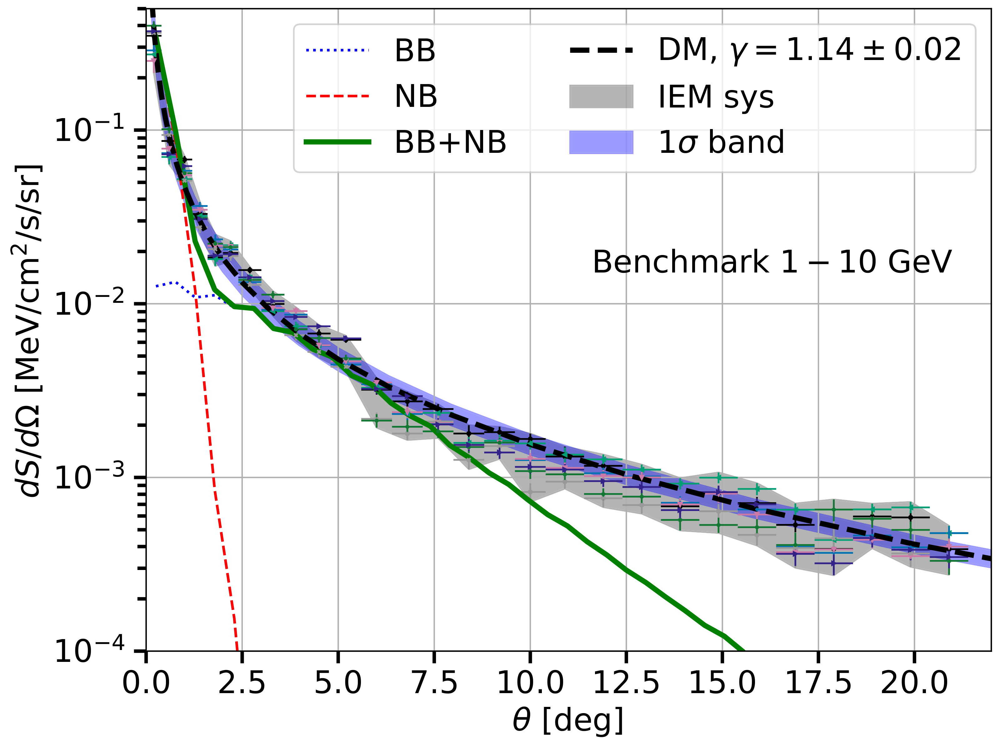
图注：Surface brightness, $dS/d\Omega$, as a function of angular distance from the GC line of sight, reconstructed using the set of IEMs adopted in this work (colored points). The black dashed curve shows the best-fit gNFW profile ($\gamma=1.15$) with its $1\sigma$ uncertainty band (blue). The gray band indicates the spread associated with the IEM choice. The red dashed and blue dotted curves show the NB and BB components obtained from a fit using only NB+BB templates, with their sum shown in green.
对应解读：对应“建议重点查看的图表”第3项和“关键图表逐图导读”图3：GCE 径向表面亮度剖面，以及模型拟合中关于 gNFW 与核球模板退化的讨论。
入选理由：这是本文形态结论的核心图，直接给出角距 θ 上的表面亮度数据点、gNFW γ=1.15 最佳拟合及 1σ 带、不同 IEM 的系统包络，以及 NB、BB 和 NB+BB 曲线。它最直接检验日报强调的 θ≈1°–2° 和 θ≳8° 处核球模板是否不足，是判断“近球对称 gNFW 是否优于核球追踪模板”的首选图。
来源与置信度：\(arxiv_source\)；high；\(arxiv_source\) / main.tex:figure[2]
Fig06
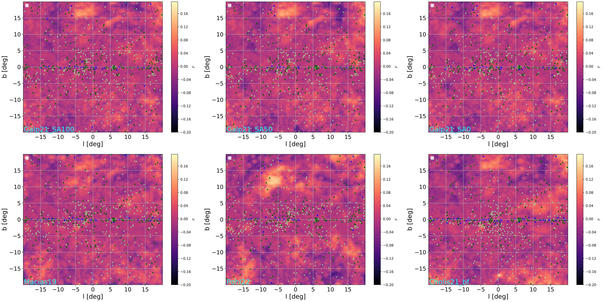
图注：Fractional-residual maps in the $40^\circ\times 40^\circ$ ROI after the final refinement step for a representative subset of IEMs. Residuals are computed using $\mathcal{F}$ defined in Eq.~\(\ref{eq:Fapp}.\) We display the 4FGL sources detected with $TS<100$ (light green) and $TS>100$ (dark green) and newly detected sources (blue).
对应解读：对应“建议重点查看的图表”第1项和第2项，以及“关键图表逐图导读”图1、图2：全 ROI 残差图和新增点源/源分布检查。
入选理由：该图展示 40°×40° ROI 中最终拟合后的分数残差图，并标出 4FGL 源和新增源，能同时检查残差是否控制在约 10% 以内、是否沿银道面或点源位置成片出现，以及新增源是否可能与平滑 GCE 模板相互吸收。相比单纯残差直方图，它保留了空间结构信息，科学诊断价值更高。
来源与置信度：\(arxiv_source\)；high；\(arxiv_source\) / main.tex:figure[6]
Fig09
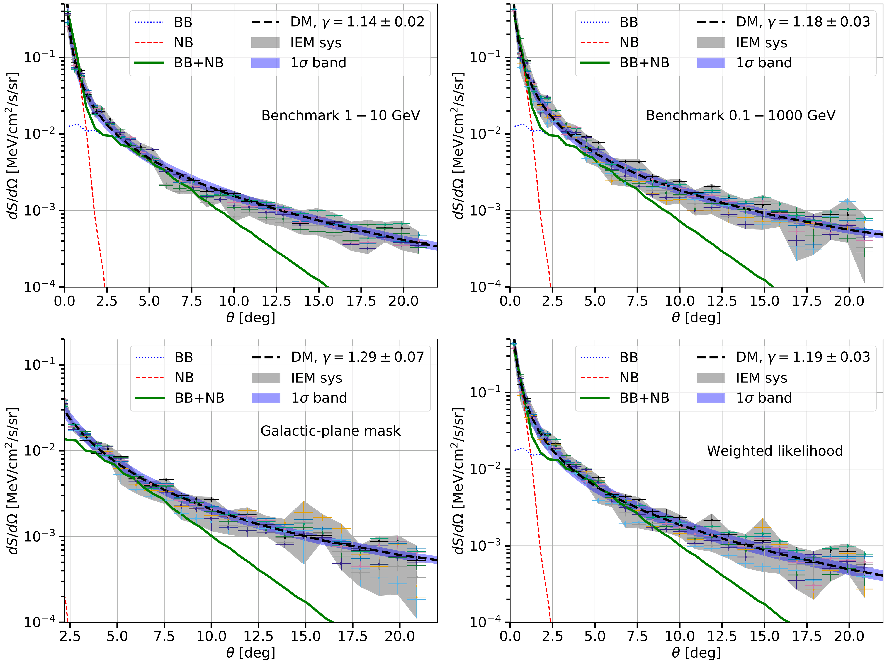
图注：Surface brightness, $dS/d\Omega$, as a function of angular distance from the GC line of sight, reconstructed using the set of IEMs adopted in this work (colored points). The black dashed curve shows the best-fit gNFW profile ($\gamma=1.15$) with its $1\sigma$ uncertainty band (blue). The gray band indicates the spread associated with the IEM choice. The red dashed and blue dotted curves show the NB and BB components obtained from a fit using only NB+BB templates, with their sum shown in green. We show the results obtained for the four analysis setups used in the paper.
对应解读：对应“建议重点查看的图表”第7项和“关键图表逐图导读”图6：不同分析设置下的稳健性检验，尤其是形态剖面对 IEM、加权似然、平面遮罩等变体的稳定性。
入选理由：该图把四种分析设置下的径向表面亮度剖面并列展示，并继续包含 gNFW、NB、BB、NB+BB 以及 IEM spread。它不仅重复检验 Fig02 的核心形态判断，还直接回答日报关心的结论是否依赖某个能段、低纬区域或特定拟合策略。
来源与置信度：\(arxiv_source\)；high；\(arxiv_source\) / main.tex:figure[9]
Fig03
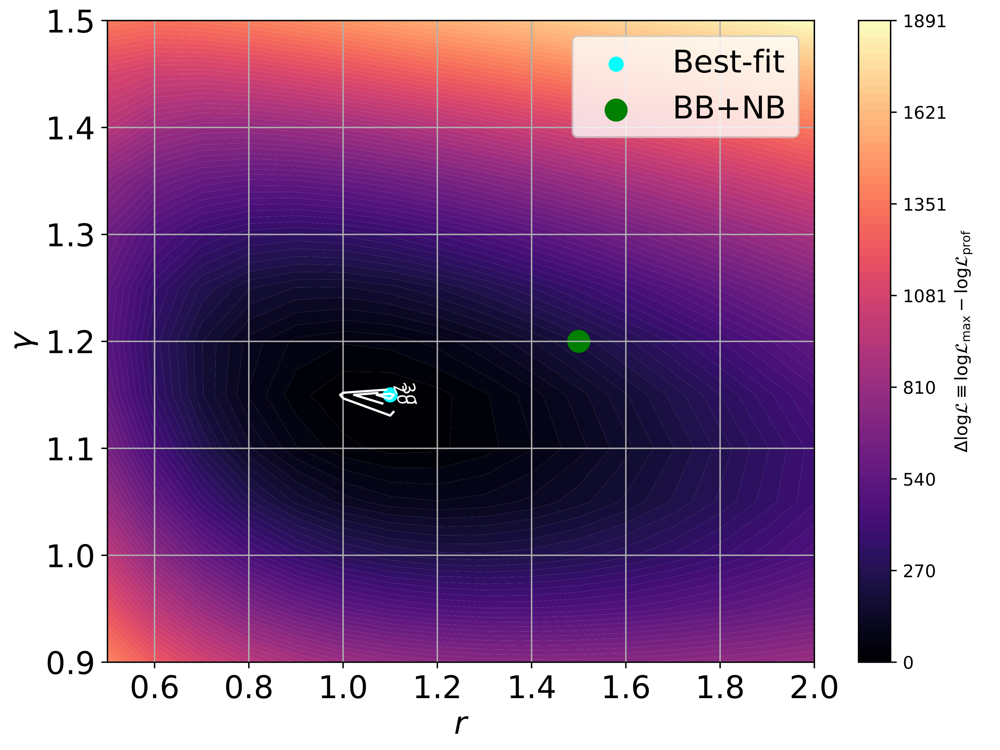
图注：Profiled log-likelihood difference $\Delta\log\mathcal{L}$ as a function of the gNFW inner slope $\gamma$ and axis ratio $r$ (elongation along the Galactic plane relative to the perpendicular direction), obtained after profiling over the IEM choice. The marker indicates the best-fit point, the white contours show the $1/2/3\sigma$ regions, and the green marker indicates the location corresponding to the NB+BB morphology.
对应解读：对应“建议重点查看的图表”第5项和模型拟合段落：不同 IEM 下 gNFW 形态参数、内斜率 γ 与轴比 r 的似然约束。
入选理由：该图给出经过 IEM profiling 后 ΔlogL 在 γ 和轴比 r 平面上的分布及 1/2/3σ 等高线，直接量化 γ≈1.15 和近球形态的统计支持，并标出 NB+BB morphology 的位置。它比只给最佳值更能展示系统误差和形态参数退化。
来源与置信度：\(arxiv_source\)；high；\(arxiv_source\) / main.tex:figure[3]
Fig04
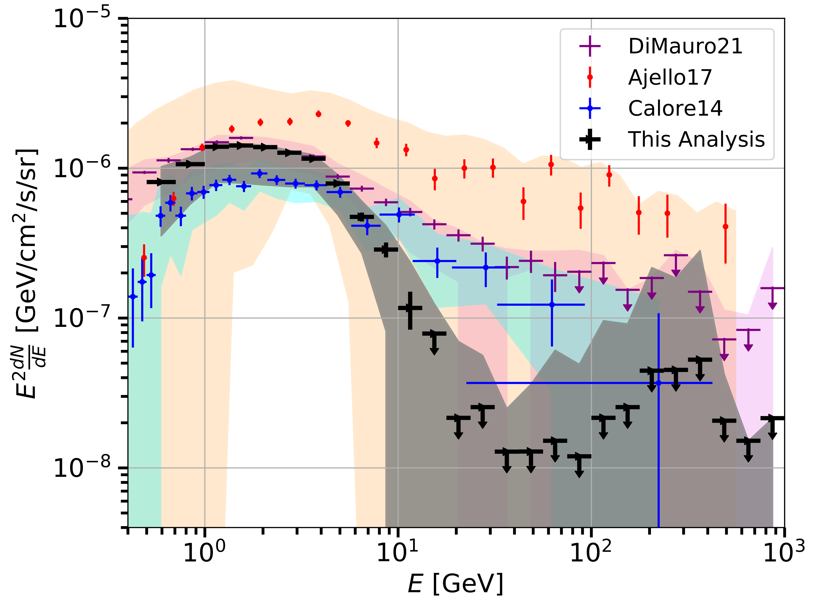
图注：GCE SED obtained with our analysis compared with previous papers. In particular, we display our result obtained with the {\(\tt\) Galp21_SA100} and the envelope of all the spectra obtained with the different IEMs. We also show the flux reported in Refs.~\(\cite{Calore:2014nla,Fermi-LAT:2017opo,DiMauro:2021prd}\)
对应解读：对应“建议重点查看的图表”第6项和“关键图表逐图导读”图5：GCE 能谱图，关注几 GeV 峰值和高能端上限。
入选理由：该图显示本文 GCE SED、不同 IEM 造成的谱包络，并与早期结果比较，直接支撑日报中关于几 GeV 峰值、几十 GeV 以上上限以及系统误差包络的解读。它是能谱结论最适合嵌入的主图。
来源与置信度：\(arxiv_source\)；high；\(arxiv_source\) / main.tex:figure[4]
Fig08
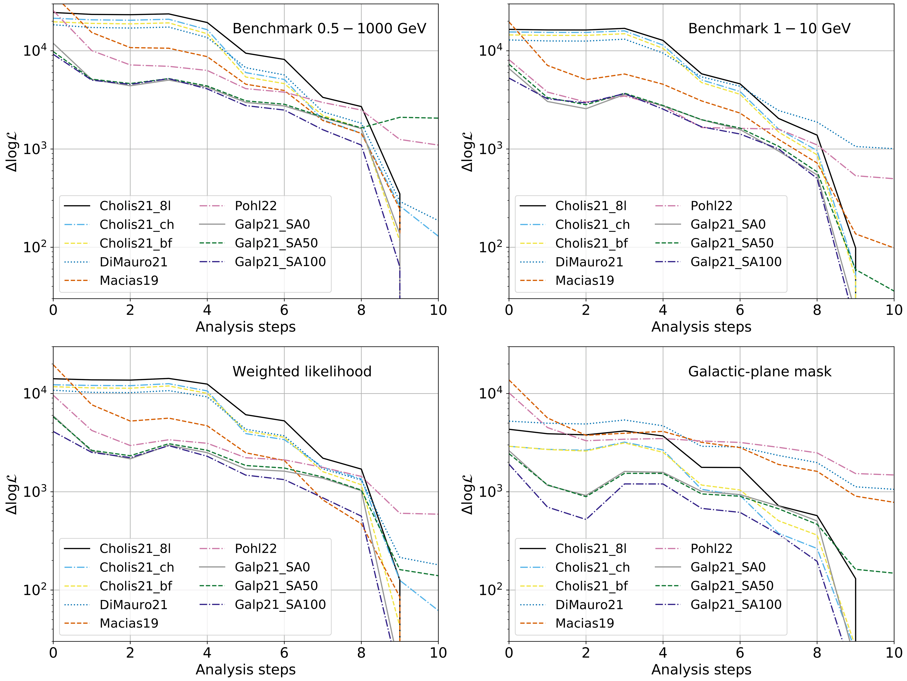
图注：Evolution of $\Delta\log\mathcal{L}$ across the analysis steps. In each panel, $\Delta\log\mathcal{L}$ is shown relative to the best-fitting IEM at that step (i.e.\ the minimum among the IEMs in that panel). Different curves correspond to different IEMs. The top panels show the \(\textbf{Benchmark}\) setup (with the two energy ranges used in the main text), while the bottom panels show the \(\textbf{Weighted-Likelihood}\) (left) and \(\textbf{Galactic-plane mask}\) (right) setups.
对应解读：对应“建议重点查看的图表”第7项和模型拟合段落：多步拟合流程、加权似然和平面遮罩下 IEM 似然表现的稳健性。
入选理由：该图展示不同分析步骤中各 IEM 的 ΔlogL 演化，并分出 Benchmark、Weighted-Likelihood 和 Galactic-plane mask 设置，可用于判断结论是否由少数 IEM 或某一步拟合驱动。虽然它不直接给出 GCE 模板 TS，但对理解多步流程如何降低系统误差很重要。
来源与置信度：\(arxiv_source\)；high；\(arxiv_source\) / main.tex:figure[8]
强相关工作
这篇工作直接处在 GCE 暗物质解释与毫秒脉冲星解释的长期争论中。早期研究强调 GCE 的球对称形态和与几十 GeV 热遗迹暗物质相容的能谱；后续研究指出核球/盒状核球模板、非泊松小尺度涨落和未分辨点源可能解释相当一部分过剩。本文的新贡献是用更严格的残差控制和多 IEM 稳健性检验重新支持近球对称广义 NFW 形态，因此应与 Calore、Cholis、Weniger 关于系统误差的分析，以及 Macias、Gordon、Goodenough 等关于核球模板的工作并读。
相反或张力方向主要包括三类：第一，非泊松模板拟合声称 GCE 更像点源族群，但该方法对弥散模型错配和源计数先验敏感；第二，核球红外模板拟合声称 GCE 追踪银河棒/核球恒星质量，但模板选择和低纬遮罩会显著影响结果；第三，宇宙线传播模型可能通过内银河注入或各向异性扩散产生中心伽马射线结构。建议检索关键词包括“Galactic Center Excess generalized NFW morphology”、“Fermi-LAT GCE bulge template”、“non-Poissonian template fitting Galactic Center Excess”、“GALPROP interstellar emission model systematics”和“millisecond pulsars Galactic bulge gamma rays”。
相似工作：
- https://arxiv.org/abs/1409.0042
- https://arxiv.org/abs/1411.4647
- https://arxiv.org/abs/1611.06644
- https://arxiv.org/abs/1901.03822
基础理论 / 方法工作：
- https://arxiv.org/abs/0910.2998
- https://arxiv.org/abs/1010.2752
- https://arxiv.org/abs/1012.4515
- https://arxiv.org/abs/1402.6703
相反观点 / 张力线索：
- https://arxiv.org/abs/1506.05124
- https://arxiv.org/abs/1507.04632
- https://arxiv.org/abs/1704.03910
- https://arxiv.org/abs/1901.03822
2. Constraining the Photon Intensity of Extragalactic Background Light with the HAWC Observatory for the Blazar Mrk 421
- 来源：arXiv / astro-ph.HE
- 链接：https://arxiv.org/abs/2605.23107v1
- 作者：R. Alfaro, C. Alvarez, A. Andrés, E. Anita-Rangel, M. Araya, J. C. Arteaga-Velázquez, D. Avila Rojas, R. Babu
- 评分：novelty 8/10，importance 8/10，relevance 10/10，final 9.70/10
- 推荐理由：HAWC对TeV耀变体Mrk 421长期监测，报告高态谱截止并用于限制EBL，同时讨论截止是否源内禀；直接涉及TeV伽马射线、HAWC、blazar和EBL，优先级很高。
中文题目：Constraining the Photon Intensity of Extragalactic Background Light with the HAWC Observatory for the Blazar Mrk 421
做了什么：本篇论文已通过推荐筛选，但自动详细解读生成失败。可先根据题目和摘要判断阅读优先级：The blazar Mrk 421 exhibits rapid variability over a wide range of timescales. Spectral differences have been observed during the different emission states of Mrk 421. During the high emission states, tests to constraint the Hubble constant and the photon intensity of Extragalactic Background Light (EBL) can be performed. The HAWC observatory provides an exceptionally long term monitoring of the source at TeV energies. We selected periods of high emission state and low emission state in data with total observation time of 2460 transits from the HAWC observatory using the All-sky Root around in an Unbiased way methodology. We report on evidence of a cutoff in the spectrum of Mrk 421 during high emission states. An Exponential Cutoff Power Law is preferred over a Simple Power Law at a $3.8\,σ$ level. In the Exponential Cutoff Power Law, the cutoff is found at $13\pm3~\text{TeV}$. Using this result, we provide upper limits on the specific intensity of EBL photons. Moreover, the value of the energy cutoff found in our analysis is different from the cutoff expected by the interaction of gamma-rays with EBL photons. This result indicates that the cutoff is intrinsic to the source.
为什么重要：这篇论文在今日候选中通过了本地推荐阈值，说明它与当前高能天体物理兴趣方向或质量标准较匹配；详细内容建议优先查看原文摘要、结论和图表。
理论 / 观测 / 仪器方法价值：由于 LLM 摘要 JSON 解析失败，本节保留为安全占位，不编造论文未确认的公式、图号或链接。
为什么应该关注：日报仍保留这篇论文，是为了避免单篇摘要失败导致整份日报缺失。请把它作为需要人工快速复核的高优先级候选。
展开详细解读：文章讲解、背景、理论、重点章节、图表与相关工作
文章详细讲解
本文的科学问题可以拆成三层。第一层是时域问题：在 HAWC 长期监测的 2460 个 transits 中，哪些时间段属于 Mrk 421 的高发射态，哪些可代表低发射态？第二层是谱形问题：高态和低态的 TeV 本征谱是否可由 SPL 描述，还是高态需要 ECPL 截止？第三层是传播问题：若存在高能弯曲，它能否解释为 EBL 吸收，或者应主要归因于源内机制；在后一种情况下，数据还能对 EBL specific intensity 给出怎样的上限？
方法上，论文先用 ARU significance 对周时间段进行无偏筛选，Fig.01 中 \(\sigma_{\rm ARU}>6\) 的紫色点被视为高活动期候选。随后作者对 HES 与 LES 分别或联合进行谱拟合，比较 SPL 与 ECPL。已有图注显示，Fig.03 展示 SPL/ECPL 下 \(\alpha-\Phi\) 参数空间及最大似然线性拟合，Fig.04 展示 ECPL 下 \(\alpha-\Phi\)、\(\lambda-\Phi\)、\(\lambda-\alpha\) 关系，Fig.05 则给出 HES/LES 本征联合谱与 ECPL 最佳拟合曲线。读者应把这些图作为同一条证据链，而不是孤立看某个 cutoff 数值。
关键结果是，高发射态中 ECPL 相对于 SPL 被偏好，显著性约为 3.8σ，ECPL 截止能量为 \(13\pm3\,\mathrm{TeV}\)。这里“证据”不是“决定性发现”：3.8σ 已足以说明 SPL 可能过于简单，但仍需要系统误差、trial factor、能量尺度和 EBL 模板依赖的检验。Fig.05 图注还指出 HES 最后一个 flux point 的显著性为 \(\sqrt{TS}=3.14\)，且 flux point 需要 \(TS\ge4\) 才纳入，这意味着高能端信息虽然关键，但统计量仍有限；任何关于 cutoff 的物理解读都应检查它是否由少数最高能 bins 主导。
EBL 约束部分的逻辑是：给定一组 EBL 模型，调整归一化或等效强度参数，计算吸收后的谱形，要求它与 HAWC 的本征/观测谱拟合相容。Fig.07 显示 dashed lines 为本文从 Mrk 421 HES 得到的 95% C.L. EBL specific intensity 上限，solid lines 为不同 EBL 模型估计，dotted lines 为 H.E.S.S. 对 M87 flare 的结果。图的用途不是证明某个 EBL 模型唯一正确，而是说明在不同波长范围内，HAWC/Mrk 421 的数据允许 EBL 光子场有多强。
论文的局限主要来自三方面。其一，Mrk 421 红移较低，EBL 吸收路径短，对 EBL 的杠杆臂弱于更远 blazar；优势在于源亮、统计好，但劣势是本征谱不确定性更容易压过传播效应。其二，ECPL 是经验谱形，不是唯一的源内模型；log-parabola、broken power law 或多区 SSC 都可能模拟类似弯曲。其三，HAWC 高能端能量分辨率和有效面积系统误差必须进入 cutoff 与 EBL 上限的误差预算。下一步最有价值的复核是：用同一时间窗口交叉匹配 Fermi-LAT、Swift-XRT 或 IACT 数据，检查 X 射线/GeV/TeV 多波段谱是否支持源内最大能量变化；同时用多种本征谱形重新计算 EBL 上限，评估模型选择带来的 envelope。
背景知识
Mrk 421 是距离较近、红移约为 z≈0.031 的 BL Lac 型耀变体，也是 TeV 伽马射线天文学中最常被用作“标准烛光式监测源”之一。它的相对论喷流几乎指向观测者，因此同步辐射峰和逆康普顿峰都会被多普勒增强，并在从 X 射线到 TeV 能段表现出强烈的日到月尺度变化。对这样一个近邻高通量 TeV 源，长期监测的价值不只是发现耀发，还在于可以把不同活动态下的谱形差异拆开，判断谱软化、谱硬化或高能截止究竟来自源内粒子加速，还是来自传播过程中的河外背景光吸收。
河外背景光 EBL 是宇宙中所有恒星形成、尘埃再辐射和星系演化累积留下的从紫外、光学到红外的弥散光场。TeV 伽马光子在宇宙传播时会与 EBL 光子发生 \(\gamma\gamma\to e^+e^-\) 对产生，因此观测到的 TeV 谱通常比源本征谱更软、更弯曲。历史上，EBL 约束主要来自星系计数的下限、直接弥散背景测量的上限，以及利用多个 blazar 的 TeV 谱反推吸收光深。本文选择 Mrk 421 的高发射态，正是利用耀发时高能端统计量较好这一优势，尝试给出 EBL specific intensity 的上限。
HAWC 的关键优势是全天候、宽视场、长时间基线。与成像大气切伦科夫望远镜相比，HAWC 的瞬时灵敏度和能量分辨率不同，但它能持续覆盖 Mrk 421 的长期活动史。本文使用总计 2460 个 transits，并通过 ARU，即 All-sky Root around in an Unbiased way 方法，划分高发射态 HES 与低发射态 LES。阅读时应特别注意：该工作的核心并非一次短时耀发的精细多波段建模，而是利用长期监测中的状态选择，比较不同状态的 TeV 谱形与 EBL 吸收模型。
一个常见误区是把观测到的 TeV 截止直接解释为 EBL 吸收。实际上，对低红移 Mrk 421 来说，十几 TeV 附近的谱弯曲既可能来自 EBL，也可能来自喷流区电子最大能量、加速冷却平衡、Klein-Nishina 效应、内部吸收或多区叠加。摘要明确说 ECPL 相对于 SPL 有 3.8σ 偏好，截止能量约 \(13\pm3\,\mathrm{TeV}\)，但该截止与 EBL 预期不同，因此作者倾向认为截止是源内本征的。读者需要把“发现谱截止”和“用谱截止约束 EBL”区分开：前者是谱拟合结果，后者依赖于对本征谱、EBL 模板归一化和系统误差的联合解释。
另一个容易忽略的背景是活动态选择会影响所有后续结论。若 HES 由周尺度 ARU 显著性阈值选出，而 LES 由月尺度低态样本构建，那么 HES/LES 的统计权重、时间平均方式和能谱响应可能不同。论文中的 Fig.01、Fig.03、Fig.04、Fig.05、Fig.06 和 Fig.07 应串起来看：先确认样本如何被选出，再看 SPL/ECPL 的参数空间，随后看本征谱和 EBL 模型系统误差，最后才解释 EBL specific intensity 上限。
基础理论 / 方法脉络
基础物理图像从两步开始：源内产生高能伽马光子，源外传播过程中被 EBL 吸收。对 BL Lac 耀变体，通常用同步自康普顿 SSC 或更一般的喷流辐射模型理解双峰谱能量分布：相对论电子在磁场中产生同步辐射，低能光子再被同一批或相邻区域电子逆康普顿散射到 GeV--TeV。本文并不需要完整求解 SSC 模型，而是把 HAWC 能段的本征 TeV 谱参数化为简单幂律 SPL 或指数截止幂律 ECPL，并检验高态下是否需要截止项。
从观测角度，望远镜记录的是空气簇射事件数，而不是直接的源光子通量。给定源谱 \(dN/dE\)、仪器有效面积、曝光、能量迁移矩阵和背景模型，可以预测每个分析 bin 中的期望计数。HAWC 长期监测特别适合做相对稳定的时域筛选：ARU significance 曲线标记出相对长期平均显著偏高的周时间段，进而把这些时间段合并为 HES 数据集。LES 则用低活动时期构成，用于与 HES 比较谱指数、通量和截止参数。
本文的谱模型核心是 SPL 与 ECPL。SPL 通常写成 \(\phi(E)=\Phi_0(E/E_0)^{-\alpha}\)，只有归一化和谱指数；ECPL 写成 \(\phi(E)=\Phi_0(E/E_0)^{-\alpha}\exp(-\lambda E)\) 或等价 \(\exp(-E/E_c)\)，其中 \(\lambda=1/E_c\)。若 \(\lambda\to0\)，ECPL 退化为 SPL。因而模型比较本质上是在问：数据是否要求一个非零 \(\lambda\)，以及这个非零 \(\lambda\) 是否稳定地出现在 HES 联合谱中，而非由 EBL 模型、能量尺度或样本选择导致。
传播吸收通过光深 \(\tau(E,z)\) 进入观测谱：\(\phi_{\rm obs}=\phi_{\rm int}\exp[-\tau(E,z)]\)。EBL 模型给出不同波长处的光子数密度或 specific intensity，进而决定 \(\tau\)。由于 Mrk 421 红移低，吸收不是任意强；若观测谱在 \(\sim13\,\mathrm{TeV}\) 出现显著截止，必须检查该能量处各 EBL 模型预期的吸收斜率是否足以解释观测弯曲。论文摘要指出截止能量与 EBL 交互预期不同，这意味着作者把观测截止更偏向解释为源内本征弯曲，同时用“不允许 EBL 过强到产生与数据不相容的吸收”来给出 EBL specific intensity 上限。
读者还应掌握几个常见退化。第一，谱指数 \(\alpha\) 与截止 \(\lambda\) 常相关：高能端统计不足时，较软的幂律和较硬但有截止的模型可能都能拟合。第二，EBL 吸收和本征 ECPL 都会造成高能端下弯，必须依靠红移、能量依赖形状和不同状态比较分辨。第三，HAWC 的能量重建、背景估计、有效面积系统误差会直接影响高能端 flux point 的显著性。第四，选择 HES 会提高高能端信噪比，但也可能偏向某类内禀谱形，因此不能把 HES 结果无条件推广到所有 Mrk 421 状态。
公式与推导
可以把本文的分析写成一条从源谱到 EBL 上限的推导链。首先定义源本征微分光子通量，SPL 情形为
其中 \(\Phi_0\) 是参考能量 \(E_0\) 处的归一化，\(\alpha\) 是光子谱指数。该式适用于能量范围内没有明显曲率、或者统计量不足以分辨曲率的近似。
ECPL 在 SPL 基础上加入高能截止：
其中 \(\lambda=1/E_c\)。本文摘要给出的 \(E_c\simeq13\pm3\,\mathrm{TeV}\) 等价于 \(\lambda\simeq0.077\,\mathrm{TeV}^{-1}\)，误差可近似由 \(\sigma_\lambda\simeq \sigma_{E_c}/E_c^2\) 传播。
EBL 传播吸收把本征谱映射为地球处观测谱：
其中 \(\tau_{\gamma\gamma}\) 是对产生光深。若 \(\tau\ll1\)，吸收近似为 \(1-\tau\)；若 \(\tau\gtrsim1\)，高能端会出现显著压低。对低红移 Mrk 421，正是要比较 \(\tau(E,z=0.031)\) 的能量依赖是否足以造成观测到的 \(\sim13\,\mathrm{TeV}\) 弯曲。
光深可形式化写为
其中 \(n(\epsilon,z)\) 是 EBL 光子数密度，\(\mu\) 是两光子夹角余弦，\(s=2E\epsilon(1-\mu)\) 是中心质能量平方的相关量，\(dl/dz\) 由宇宙学模型给出。该式说明 EBL 模型如何通过光子数密度进入 TeV 谱衰减。
对产生的阈值关系给出最有用的波长直觉：
在近似 head-on 碰撞下，TeV 伽马光子主要探测红外到光学 EBL；常用量级关系是
到若干倍因子范围，精确峰值取决于截面最大值而非单纯阈值。因而十几 TeV 的 Mrk 421 光子主要对中红外波段 EBL 敏感，这也是 Fig.07 横轴用 wavelength 展示的原因。
EBL specific intensity 与光子能量密度的联系可写为
其中 \(u_\nu\) 是单位频率能量密度。若用 EBL 模板 \(u_\nu^{\rm model}\) 并引入归一化 \(\alpha_{\rm norm}\)，则
在模板形状固定、只缩放强度时成立。本文 Fig.07 所谓 95% C.L. 上限可理解为对 \(\alpha_{\rm norm}\) 的上限再转换到 \(\nu I_\nu\)。
仪器观测并不直接拟合 \(\phi(E)\)，而是拟合每个 bin 的期望计数：
其中 \(T\) 是曝光，\(A_{\rm eff}\) 是有效面积，\(R_i(E)\) 是能量/分析 bin 响应，\(b_i\) 是背景，\(\boldsymbol{\theta}\) 包括 \(\Phi_0,\alpha,\lambda,\alpha_{\rm norm}\) 等参数。
若计数近似服从 Poisson 分布，似然可写为
模型比较通常用
并在适用条件下把 \(\sqrt{TS}\) 近似为显著性。但由于 \(\lambda\ge0\) 位于参数边界，严格显著性应核查是否使用了合适的混合 \(\chi^2\) 分布或 Monte Carlo 校准。
对 EBL 上限，profile likelihood 的 one-sided 条件常写作
其中其他谱参数在每个 \(\alpha_{\rm norm}\) 下重新优化。该式让读者检查 Fig.07 的 95% C.L. 是否来自统计 profile、是否加入系统误差，以及不同 EBL 模板的上限为何不同。
模型拟合 / 应用方法
本文拟合的核心量包括通量归一化 \(\Phi_0\) 或积分通量 \(\Phi(>1\,\mathrm{TeV})\)、谱指数 \(\alpha\)、ECPL 的 inverse cutoff energy \(\lambda=1/E_c\)，以及 EBL 模板归一化 \(\alpha_{\rm norm}\) 或由其转换得到的 \(\nu I_\nu\) 上限。HES 与 LES 既有单周/月样本的散点拟合，也有合并后的联合拟合。读者应确认每个 flux point 的 TS 阈值，图注指出 Fig.05 中采用 \(TS\ge4\)，HES 最后一点 \(\sqrt{TS}=3.14\)，这对 cutoff 拟合尤其关键。
似然层面应把 HAWC 的事件计数、背景和响应折叠进模型，而不是直接对 unfolded flux points 做普通最小二乘。理想阅读检查包括：正文是否定义 Poisson likelihood 或 HAWC 标准 likelihood；模型比较是否用 \(TS=2\Delta\ln\mathcal{L}\)；ECPL 相对 SPL 的 3.8σ 是否来自 Wilks 定理；以及 \(\lambda\ge0\) 的边界是否导致显著性分布偏离普通 \(\chi^2_1\)。如果论文未详细说明，应把这一点列为复现实验时必须核查的统计假设。
残差诊断应围绕 Fig.05 展开。一个可信的 cutoff 不应只改善最高能一个点，而应在多个高能 bins 中系统减少 SPL 的偏差。读者应查看是否有 residual panel、pull distribution、或至少在正文中报告 SPL 与 ECPL 对高能端的偏离。如果没有残差图，可以用图中 flux points 与模型线近似判断：低能端是否被 ECPL 牺牲，高能端是否仅由低 TS 点控制，HES 和 LES 是否需要不同 \(\alpha\) 或 \(\lambda\)。
参数退化主要有三类。第一是 \(\alpha-\lambda\) 退化：更软的谱指数可模拟部分高能下降，导致 \(E_c\) 变大或变小的不确定性。Fig.04 的 \(\lambda-\alpha\) 面板正是检查这一点。第二是 \(\Phi-\alpha\) 退化：归一化和谱指数的相关性会影响积分通量趋势，Fig.03 的线性拟合带可帮助判断活动态是否真的谱变。第三是 EBL 吸收与本征 cutoff 退化：二者都会造成高能弯曲，Fig.06 用不同 EBL 模型给出的 uncertainty boxes 估计这种系统影响。
系统误差方面，最敏感的是能量尺度、有效面积、背景估计、源位置/扩展假设、EBL 模板选择和时间选择。能量尺度若整体偏移，会直接把 \(E_c\) 从 \(13\,\mathrm{TeV}\) 推到不同值；有效面积高能端误差会改变最高能 flux point；背景误差会影响低 TS bins 的存在性。活动态选择也会造成 selection bias：HES 合并的是高显著性周，可能偏向硬谱或高 cutoff 状态，而 LES 的月尺度平均可能抹平短时结构。
模型可能失败的情形包括：本征谱不是 ECPL 而是 log-parabola 或 broken power law；HES 实际由多个物理状态叠加，联合谱曲率是时间平均造成的；EBL 模板形状固定但真实 EBL 波长形状不同；或 HAWC 高能端响应系统误差尚未完全覆盖。稳健性测试应包括替换本征谱形、逐一移除最高能 bins、改变 HES 阈值、使用不同 EBL 模型重拟合、并把统计误差和系统误差分开报告。
重点章节 / 结果段落怎么读
-
引言与科学动机：阅读时应找出作者如何连接三个主题——Mrk 421 的 TeV 变源性、HAWC 长期监测优势、EBL 吸收约束。重点记录他们引用哪些 EBL 模型和哪些既有 TeV blazar 约束；若引言把 Hubble constant 与 EBL 强度都作为可检验对象，需要分清本文实际给出的是 EBL specific intensity 上限还是还包含宇宙学参数约束。
-
数据集与 ARU 活动态选择：这是全篇可靠性的第一关。需要确认 2460 transits 的时间跨度、质量筛选、ARU significance 的定义、HES 阈值 \(\sigma_{\rm ARU}>6\)、LES 的构建方式以及周/月时间 bin 的差异。特别要看 Fig.01 对样本的影响：HES 是否足够多以支持联合谱，LES 是否避免被弱耀发污染。
-
谱模型与似然方法：这一节应重点读 SPL、ECPL、EBL 吸收修正和 HAWC 响应如何进入拟合。记录参考能量、通量定义、积分通量 \(>1\,\mathrm{TeV}\) 的单位、\(\lambda\) 与 \(E_c\) 的转换，以及 TS 的定义。若论文只简略说明，应在阅读笔记中标注需要从 HAWC 标准分析文献补足响应和背景似然细节。
-
HES/LES 参数空间结果：对应 Fig.03 和 Fig.04。阅读目标不是背下每个散点，而是判断活动态变化主要表现为通量变化、谱指数变化还是 cutoff 参数变化。要特别关注联合拟合点与单时段散点的关系，以及 \(\alpha\)、\(\Phi\)、\(\lambda\) 的退化结构。
-
本征谱与 cutoff 证据：对应 Fig.05 及模型比较文字。这里应核查 ECPL 相对 SPL 的 3.8σ 如何得到，是否为 \(\Delta TS\) 转换，是否考虑 \(\lambda\ge0\) 边界，是否加入系统误差。\(13\pm3\,\mathrm{TeV}\) 是全文最重要的数值之一，但它的物理解释必须与 EBL 预期 cutoff 区分开。
-
EBL 上限与讨论：对应 Fig.06、Fig.07 和结论。阅读时应记录作者测试了哪些 EBL 模型、benchmark 是哪个、四个模型变化如何形成 uncertainty boxes，以及 95% C.L. upper limits 如何从 \(\alpha_{\rm norm}\) 转换为 \(\nu I_\nu\)。最后检查讨论部分是否充分说明 cutoff intrinsic to source 的证据强度，以及未来多波段或多源分析如何改善约束。
建议重点查看的图表
-
活动态筛选图：优先看 Fig.01 的 weekly ARU significance 曲线。检查纵轴 \(\sigma_{\rm ARU}\) 的定义、阈值 \(>6\) 的选择、紫色 HES 点是否集中在少数季节，以及灰色 LES/普通点是否可能受长期基线漂移影响。该图决定后续 HES 样本是否干净。
-
SPL 与 ECPL 的 \(\alpha-\Phi\) 参数空间：看 Fig.03 上下两面板。重点比较 SPL 与 ECPL 假设下谱指数和积分通量是否出现系统性趋势，最大似然线性拟合的 1σ/2σ 带是否覆盖大多数周/月样本，以及 HES 联合点和 LES 联合点是否只是由高 TS 数据点驱动。
-
ECPL 截止参数诊断：看 Fig.04 的 \(\lambda-\Phi\)、\(\lambda-\alpha\) 面板。\(\lambda=1/E_c\) 越大表示 cutoff 能量越低；应检查 HES diamonds 与 LES circles 是否在 \(\lambda\) 上分离，还是误差和 TS 颜色显示二者重叠。若 \(\lambda\) 与 \(\alpha\) 强相关，截止能量解释会更依赖先验或能量范围。
-
本征联合能谱与 ECPL 拟合：看 Fig.05。检查红色 HES 与蓝色 LES flux points 的能量范围、最高能点 TS、黑色实线和紫色虚线代表的最佳 ECPL 是否在误差带内系统偏离。特别注意最高能 bin：如果 cutoff 主要由最后一两个点决定，应在模型拟合部分重点讨论稳健性。
-
EBL 模型系统误差图：看 Fig.06。该图展示不同 EBL 模型对 \(\alpha\)、\(\Phi\)、\(\lambda\) 的影响，solid markers 为 benchmark nominal Dominguez，uncertainty boxes 为四个 EBL 模型的最大变化。读者应检查 EBL 模型变化是否足以移动 HES/LES 结论，尤其是 \(\lambda-\Phi\) 右图中向更小 \(\lambda\) 的偏移。
-
EBL specific intensity 上限：看 Fig.07。横轴是 EBL photon wavelength，纵轴是 \(\nu I_\nu\)。比较 dashed upper limits、solid EBL 模型和 dotted H.E.S.S. M87 结果。需要确认 95% C.L. 是对 \(\alpha_{\rm norm}\) 的 one-sided upper limit，还是经过 profile likelihood 得到，并检查哪些波长段真正由 HAWC/Mrk 421 数据约束。
-
似然或 TS 分布诊断：如果正文或附录给出 SPL vs ECPL 的 TS 差、profile likelihood 曲线或参数置信区间，应检查 \(\Delta TS\) 是否满足 Wilks 定理近似、\(\lambda\ge0\) 的边界条件是否修正显著性，以及系统误差是否与统计误差合并。
-
能量响应与系统误差表：若论文中有仪器响应、能量 bin、有效面积或背景系统表，应重点看高能端有效面积、能量尺度偏差和背景不确定性。对 TeV cutoff 和 EBL 上限而言，这些系统量往往比低能统计误差更关键。
关键图表逐图导读
图 1：weekly ARU significance curve 是全篇样本选择的入口。横轴应是按周排列的观测时间或 transits，纵轴为相对长期发射水平的偏离显著性 \(\sigma_{\rm ARU}\)。紫色 crosses 标出 \(\sigma_{\rm ARU}>6\) 的周，灰色 circles 为低于阈值的周。读图时不要只数紫色点数量，还要看它们是否成簇、是否靠近观测季节边界、是否可能受仪器状态变化影响。陷阱是把 ARU 高显著性等同于物理耀发分类的唯一标准；实际上它只是构建 HES 的统计筛选，后续谱拟合仍需检验这些周合并后是否有统一谱形。
图 3：该图在 \(\alpha-\Phi\) 平面比较 SPL 与 ECPL 的本征谱参数。横轴或纵轴之一为积分通量 \(\Phi\)，另一个为谱指数 \(\alpha\)，颜色条表示 TS；diamonds 是 weekly HES，circles 是 monthly LES，cross 和 hexagon 分别给出 HES/LES 联合拟合点。黑色虚线是最大似然线性拟合，灰色阴影是 1σ/2σ 带。读者应检查 HES 是否呈现“brighter-harder”或相反趋势，以及这种趋势在 SPL 和 ECPL 下是否保持。若加入 ECPL 后 \(\alpha-\Phi\) 相关性明显变弱，说明原来的一部分谱指数变化可能由未建模截止吸收进去了。
图 4：该图是 ECPL 参数退化诊断，包含 \(\alpha-\Phi\)、\(\lambda-\Phi\) 和 \(\lambda-\alpha\) 三个空间。\(\lambda\) 是 inverse cutoff energy，因此更小的 \(\lambda\) 对应更高的 \(E_c\) 或更弱截止。需要重点看 middle panel 中高通量 HES 点是否系统偏向某一 \(\lambda\) 区域，以及 lower panel 中 \(\lambda\) 与 \(\alpha\) 是否呈斜向相关。陷阱是直接把联合拟合点当作所有时段的代表；如果单周点分散且 TS 低，联合点可能更多反映高统计权重时段。
图 5：这是核心能谱图，展示 HES 红色 circles 和 LES 蓝色 diamonds 的本征联合谱，黑色实线和紫色虚线为 ECPL 最佳模型，色带为误差传播后的 1σ 统计不确定性。横轴通常是伽马射线能量，纵轴可能是微分通量或 SED 形式，必须从图注确认。读图时要看 HES 与 LES 在低能端主要差别是归一化还是谱指数，在高能端是否出现红色点相对 SPL 外推的系统下弯。最高能点 \(\sqrt{TS}=3.14\) 很重要但也脆弱；若模型线的 cutoff 主要由该点决定，就需要查看去掉该点或改变能量尺度后的稳健性。
图 6：该图检验 EBL 建模对 HES/LES 联合谱参数的影响。左图 \(\alpha-\Phi\) 显示不同活动期下谱指数没有明显变化，右图 \(\lambda-\Phi\) 显示 inverse cutoff energy 向较小值移动；solid markers 是 benchmark nominal Dominguez，uncertainty boxes 是四个 EBL 模型导致的最大变化。读者应把误差框与 HES/LES 分离程度比较：若误差框与状态差异同量级，则结论更依赖 EBL 模型；若误差框远小于状态差异，则 cutoff 解释更稳健。
图 7：这是最终 EBL specific intensity 上限图。横轴为 EBL photon wavelength，纵轴为 \(\nu I_\nu\)。solid lines 是不同 EBL 模型预测，dashed lines 是本文 HES 分析得到的 95% C.L. 上限，dotted lines 是 H.E.S.S. 对 M87 flaring periods 的结果。关键读法是看 dashed lines 与 solid lines 的相对位置：上限若显著高于模型，只说明数据允许这些模型；若接近或压低某些模型，则有排除能力。陷阱是把上限当作测量值；它是 one-sided 约束，并依赖于本征谱形和模板归一化处理。
论文原图 / 可嵌入图片
Fig05
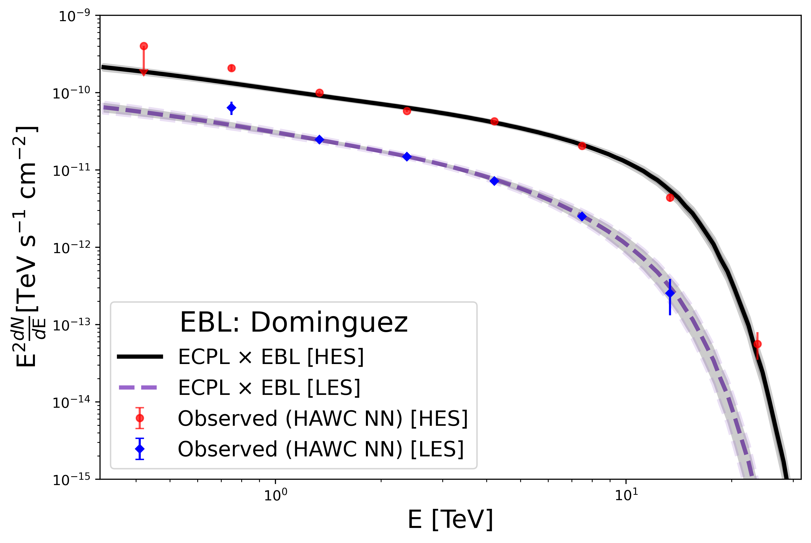
图注：Spectrum of Mrk 421 for two different emission states. Intrinsic joint spectrum obtained for HES (red circles) and LES (blue diamonds) datasets. The minimum $TS$ value to consider a flux point is $TS = 4$. For the HES spectrum, the last point has a significance of $\sqrt{TS} = 3.14$. The black solid and purple dashed lines represent the best ECPL model obtained after fitting. The bands correspond to $1\sigma$ statistical uncertainty after error propagation.
对应解读：建议重点查看的主要数据与模型拟合；对应谱能量分布、ECPL最佳拟合、1σ统计不确定性以及高/低发射态比较。
入选理由：这是支撑论文核心结论的关键图：直接展示Mrk 421在高发射态和低发射态的本征联合能谱，并给出ECPL模型拟合曲线与1σ误差带。摘要中提到的高态谱截止、ECPL优于简单幂律以及截止能量约13 TeV，最需要通过这张能谱图来理解。
来源与置信度：\(arxiv_source\)；high；\(arxiv_source\) / apssamp.tex:figure[5]
Fig07
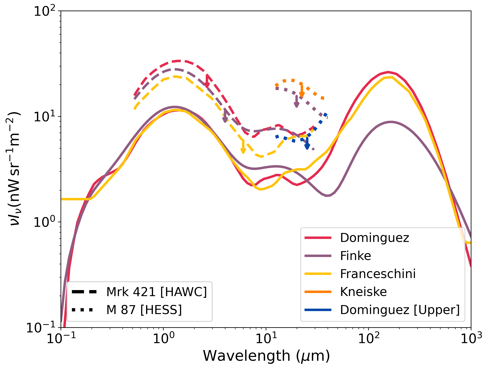
图注：Upper Limits to EBL specific intensity ($\nu I_\nu$) as a function of photon wavelength for different EBL models. The upper limits are derived from the best fit to the intrinsic spectrum and finding the 95\% C.L. to $\alpha_\text{norm}$. Dashed lines represent the upper limits obtained from our analysis of Mrk 421 during HES periods. Dotted lines are the results obtained by H.E.S.S. observations of M 87 during the flaring periods \(\citepalias{hessM87}.\) Solid lines are the estimated specific intensity for the different EBL models used in our analysis and by H.E.S.S.
对应解读：建议重点查看的参数约束与置信区间；对应EBL specific intensity上限、95%置信水平以及不同EBL模型比较。
入选理由：论文标题中的主要科学目标是约束河外背景光EBL光子强度，这张图直接给出νIν随波长变化的EBL强度上限，并与不同EBL模型和H.E.S.S. M87结果比较，是展示最终物理约束的最重要图之一。
来源与置信度：\(arxiv_source\)；high；\(arxiv_source\) / apssamp.tex:figure[7]
Fig06
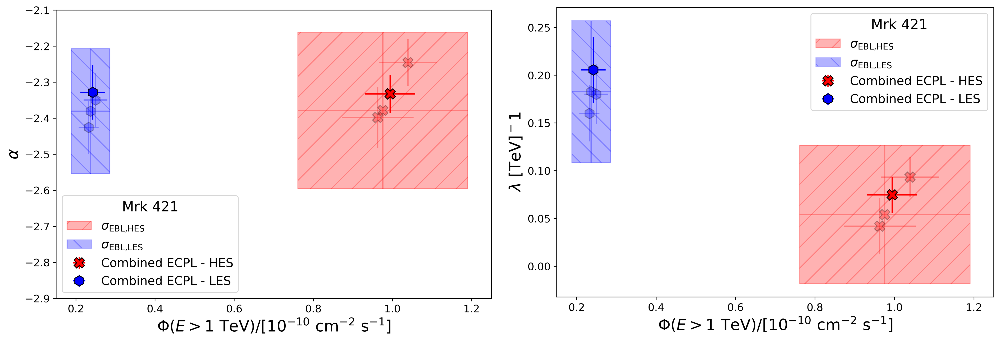
图注：Impact of the EBL modeling on the combined spectrum of HES (red crosses) and LES (blue hexagons) datasets. \(\textit{Left}\): Spectral index versus photon flux ($\alpha$--$\Phi$) shows no variation for spectral index for different activity periods. \(\textit{Right}\): Inverse cutoff energy versus integrated flux ($\lambda-\Phi$) exhibits shift towards smaller values. In both cases, the flux is integrated for gamma-ray energies above 1 TeV and expressed in units of $10^{-10}$ cm$^{-2}$\,s$^{-1}$. The solid markers are the results for our benchmark model (nominal Dominguez). The uncertainty boxes were computed with the maximal variation from the four EBL models tested.
对应解读：模型拟合与系统误差检查；对应不同EBL模型对谱指数、通量和截止参数的影响，以及不确定性框。
入选理由：该图专门展示EBL建模选择对HES/LES联合谱参数的影响，包含benchmark模型和由多个EBL模型给出的最大变化不确定性框，最适合支撑日报中关于系统误差、模型依赖性和截止参数稳健性的讨论。
来源与置信度：\(arxiv_source\)；high；\(arxiv_source\) / apssamp.tex:figure[6]
Fig04
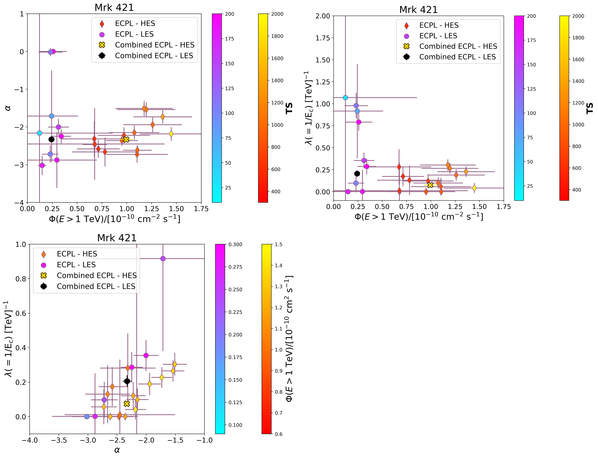
图注：Scatter of weekly HES (diamonds) and monthly LES (circles) periods assuming an ECPL model. The different parameter spaces are ($\alpha$--$\Phi$) (upper panel), ($\lambda$--$\Phi$) (middle panel) and ($\lambda$--$\alpha$) (lower panel). The color bars indicate the $TS$ (left and middle panels) and photon flux $\Phi$ (right panel). The cross and the hexagon show the results for the joint fits of HES and LES datasets respectively.
对应解读：模型拟合参数空间诊断；对应ECPL模型下α–Φ、λ–Φ和λ–α参数关系，以及TS编码。
入选理由：这张图集中呈现ECPL模型的关键参数空间，特别是 inverse cutoff energy λ 与通量、谱指数之间的关系，有助于判断截止项是否与发射态或谱形变化相关，是理解ECPL拟合结果的重要诊断图。
来源与置信度：\(arxiv_source\)；high；\(arxiv_source\) / apssamp.tex:figure[4]
Fig01
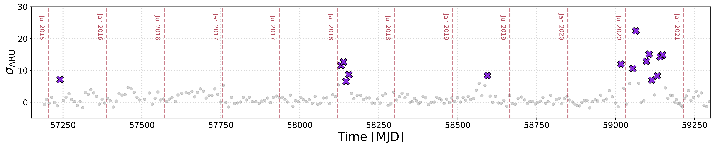
图注：Weekly ARU significance curve for Mrk 421. Significance $\sigmaru$ of deviation of the observed counts from the scaled long-term emission for weekly periods. Purple crosses show all the weekly periods where $\sigmaru$ is greater than 6 and are likely related to periods of increased activity of Mrk 421. Gray circles indicate periods with $\sigmaru$ smaller than 6.
对应解读：样本选择与主要数据检查；对应ARU方法筛选高发射态周时间段的显著性曲线。
入选理由：论文的后续谱拟合和EBL约束都依赖于高发射态HES与低发射态LES的划分。Fig01展示weekly ARU显著性并标出σ_ARU>6的高活动期，是验证样本选择是否合理的基础图。
来源与置信度：\(arxiv_source\)；high；\(arxiv_source\) / apssamp.tex:figure[1]
Fig03
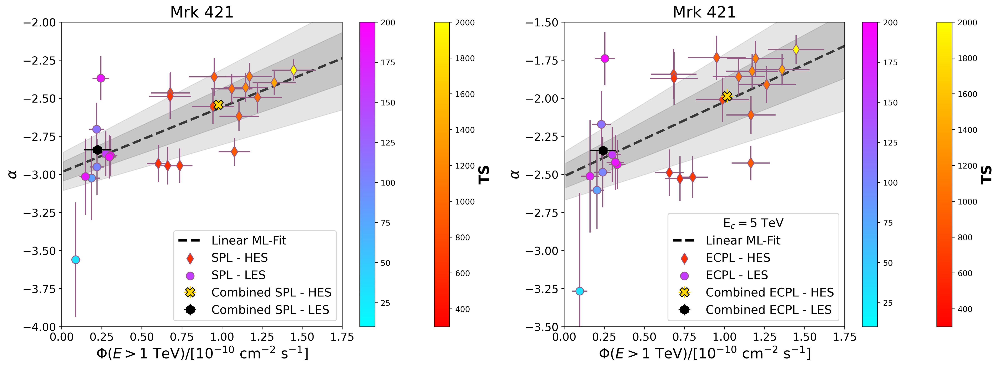
图注：Scatter of weekly HES (diamonds) and monthly LES (circles) periods in the ($\alpha$--$\Phi$) parameter space. Parameters obtained for the intrinsic spectrum assuming a SPL model (upper panel) and ECPL model (lower panel). The color bars indicate the $TS$. The cross and the hexagon show the results for the joint fits of HES and LES datasets respectively. We also include the best ML linear fit (black dashed line) and the $1\sigma$ and $2\sigma$ uncertainties bands (shaded gray bands) around the linear fit.
对应解读：模型比较与参数趋势；对应本征谱在SPL和ECPL假设下的α–Φ关系、TS、联合拟合点和1σ/2σ不确定性带。
入选理由：该图同时比较SPL与ECPL本征谱假设下的谱指数—通量关系，并包含最大似然线性拟合及1σ/2σ置信带，可用于辅助理解不同谱模型对发射态参数趋势的影响。
来源与置信度：\(arxiv_source\)；high；\(arxiv_source\) / apssamp.tex:figure[3]
强相关工作
相似工作可以沿三条路径检索。第一条是 HAWC 对 Mrk 421/Mrk 501 等近邻 blazar 的长期监测和 TeV 光变谱分析，关键词包括 “HAWC Mrk 421 spectrum variability”, “HAWC blazar monitoring”, “high emission state TeV cutoff”。这类文献提供 HAWC 响应、transit 数据处理、TS 定义和长期光变筛选的基础，可用于判断本文 ARU 方法与既有 HAWC 分析是否一致。
第二条是利用 TeV blazar 约束 EBL 的基础工作，关键词包括 “EBL constraints TeV blazars optical depth”, “gamma-ray horizon”, “Dominguez EBL model”, “Franceschini Finke Gilmore EBL model”。这些工作通常通过多个红移源、不同本征谱假设和 EBL 模板缩放来约束 \(\tau(E,z)\)。与本文相比，多源样本红移杠杆更强，但单源长期高态分析能更细致地控制源状态。
第三条是与本文形成张力或互补的 IACT 结果，例如 H.E.S.S.、MAGIC、VERITAS 对 Mrk 421 高态谱、M87 flare EBL 上限、以及多波段 SSC 建模论文。Fig.07 已把 H.E.S.S. M87 flaring periods 的 dotted results 与本文 dashed upper limits 放在一起，读者应回到对应论文检查它们采用的本征谱形、红移、能量范围和置信区间定义是否可直接比较。
基础理论方面，应补读 \(\gamma\gamma\) 对产生截面、EBL specific intensity 与能量密度转换、以及 blazar SSC 谱形的经典教材或综述。特别要注意“EBL 吸收导致 cutoff”和“源内最大粒子能量导致 cutoff”在观测上高度相似，分辨它们通常依赖多红移样本、多波段同时观测、时间演化和对本征谱曲率的保守假设。本文的结论线索正位于这个张力上：高态 Mrk 421 显示 ECPL cutoff，但作者认为该 cutoff 与 EBL 预期不同，更可能是 intrinsic to the source。
相似工作：
（未提供）
基础理论 / 方法工作：
（未提供）
相反观点 / 张力线索：
（未提供）
3. An extremely bright slow-rising afterglow from an off-axis jet in GRB 260310A
- 来源：arXiv / astro-ph.HE
- 链接：https://arxiv.org/abs/2605.23818v1
- 作者：Yu-Han Yang, Roberto Ricci, Eleonora Troja, Muskan Yadav, Yi-Han Iris Yin, Rubén Sánchez-Ramírez, Brendan O'Connor, Niccoló Passaleva
- 评分：novelty 8/10，importance 8/10，relevance 9/10，final 9.35/10
- 推荐理由：附近长暴GRB 260310A的多波段余辉、离轴喷流解释、反向激波与晚期再增亮，对GRB喷流结构和高能瞬变物理很有价值，属于重点高能暂现源论文。
中文题目：GRB 260310A：离轴喷流导致的极亮、缓慢上升余辉
做了什么：这篇论文对近邻长暴 GRB 260310A 做了从 X 射线、光学到射电的多波段跟踪。这个暴的瞬时伽马射线能量释放只有 \(E_{\gamma,{\rm iso}}\simeq3.5\times10^{50}\,{\rm erg}\)，但余辉却异常明亮，并且光学余辉不是快速衰减，而是在约 \(0.1\,{\rm d}\) 才达到峰值，早期上升斜率约为 \(\alpha\approx-1\)。作者认为，弱瞬时辐射、较硬谱峰和迟到余辉峰值可以由离轴观测的 GRB 喷流自然解释。射电谱能量分布还显示正向激波和反向激波成分并存，使它成为检验离轴几何中反向激波模型的少见样本；晚期 X 射线再增亮和低射电偏振则对双成分喷流解释提出了强约束。
为什么重要：GRB 260310A 重要在于它把几个通常分开讨论的问题放在了同一个近邻事件里：低 \(E_{\gamma,{\rm iso}}\) 的瞬时辐射、极亮多波段余辉、延迟的余辉起峰、可能的离轴视线、射电反向激波以及晚期再增亮。若解释正确，它说明一些看似“低能”的 GRB 可能只是几何上偏离喷流轴线，而不是发动机本身弱；同时它也逼迫我们认真处理结构化喷流或双成分喷流的能量预算。
理论 / 观测 / 仪器方法价值：对理论而言，这篇工作给离轴喷流、结构化喷流、正向/反向激波耦合和双成分喷流模型提供了一个高信噪比测试场。对观测而言，它展示了早期光学起峰、宽频射电谱、X 射线长期监测和射电偏振联合使用的诊断能力。对方法而言，论文强调不能只用瞬时 \(\gamma\) 射线亮度来判断喷流总能量，也不能把晚期再增亮简单归因于单一能量注入而不检查多波段谱形和偏振。
为什么应该关注：如果你关心 GRB 喷流结构、超新星伴随的长暴、射电余辉建模或未来广视场暂现源巡天，这篇论文值得看。它提示我们：低亮度 GRB 样本中可能混有大量离轴普通喷流；早期缓升余辉可作为几何视角诊断；而晚期再增亮若来自窄喷流核，会把真实能量和轴上等效亮度推到非常极端的范围。换句话说，这个事件不是“又一个亮余辉”，而是一个能检验 GRB 统一图景的边界案例。
展开详细解读：文章讲解、背景、理论、重点章节、图表与相关工作
文章详细讲解
科学问题：GRB 260310A 的核心矛盾是，瞬时伽马射线释放不高，\(E_{\gamma,{\rm iso}}\simeq3.5\times10^{50}\,{\rm erg}\)，但 X 射线、光学和射电余辉却跻身极亮样本。更不寻常的是，光学余辉在触发后并未马上进入常见的幂律衰减，而是出现约 \(0.1\,{\rm d}\) 的延迟起峰，早期缓慢上升斜率约为 \(\alpha\approx-1\)。这类组合特征很难用简单的轴上顶帽喷流加均匀外介质模型同时解释，因为轴上视线通常会看到强瞬时辐射和早期已起峰的余辉。
作者怎么做：论文汇集了多波段观测，包括 X 射线长期光变、光学早期和晚期测光、射电宽频谱能量分布，以及 \(15\,{\rm GHz}\) 的线偏振测量。作者用同步辐射余辉框架解释射电到 X 射线的谱形和时间演化，并特别关注正向激波与反向激波的相对贡献。离轴几何是解释链条的关键：当观测角 \(\theta_{\rm obs}\) 大于喷流有效开角或偏离喷流核心时，瞬时辐射会因相对论 beaming 被压低，而余辉在喷流减速、辐射锥逐渐扫过视线时才上升。
关键结果：论文认为弱瞬时辐射、较硬峰值能量和迟到余辉起峰共同支持离轴喷流解释。射电谱能量分布与同步辐射相容，并需要同时考虑反向激波和正向激波，这使 GRB 260310A 成为离轴几何下检验反向激波模型的少见案例。X 射线在晚期出现显著再增亮，并持续监测到约 \(68\,{\rm d}\)，且没有明显谱演化；这意味着再增亮更可能是动力学或几何成分变化，而不是简单的谱段穿越。\(15\,{\rm GHz}\) 在 \(T_0+55\,{\rm d}\) 测得低线偏振 \(\Pi\approx1.7\%\)，提示晚期从射电到 X 射线可能已由正向激波主导。
局限和下一步：最关键的不确定性是晚期 X 射线再增亮的物理归因。若把它解释为一个更窄、更亮喷流核心在较大离轴角下浮现，那么轴上观察者对应的各向同性等效亮度和能量会非常极端，需要检查是否与 GRB 群体统计、喷流能量函数和事件率相容。反之，若使用能量注入、密度结构变化或微物理参数演化解释，也必须同时通过无谱演化、多波段同步谱和偏振约束。下一步需要更晚期射电成像或光变、更多偏振时序点、主星系和超新星成分扣除，以及面向结构化喷流的全局贝叶斯拟合。
背景知识
研究对象是一个近邻长时标伽马射线暴 GRB 260310A，红移约为 \(z\simeq0.153\)，并与宽线 Ic 型超新星有关。长暴与大质量恒星塌缩的联系已经相当稳固，典型图像是中心发动机发射相对论喷流，喷流穿出恒星包层后产生瞬时 \(\gamma\) 射线，随后与周围介质相互作用产生跨越射电、光学和 X 射线的余辉。
历史上，GRB 余辉建模常从“轴上顶帽喷流”近似出发：喷流在开角 \(\theta_j\) 内能量和洛伦兹因子近似均匀，观测者位于喷流轴附近。这一模型可以解释许多经典余辉的幂律衰减和喷流折断，但它对低亮度 GRB、迟到起峰、复杂再增亮和多成分射电谱常常过于简化。GRB 170817A 之后，离轴结构化喷流成为主流问题之一，因为它清楚展示了视角效应如何改变瞬时辐射和余辉亮度。
GRB 260310A 值得重新看，是因为它不是一个暗弱、难以约束的边缘事件，而是一个余辉极亮的近邻事件。近邻意味着红移、宿主星系、超新星关联和多波段跟踪都更容易做；极亮意味着射电谱、偏振和晚期 X 射线再增亮都有足够信噪比。这样的组合可以把“离轴解释”从定性故事推进到可检验的动力学和辐射模型。
一个常见误区是把低 \(E_{\gamma,{\rm iso}}\) 直接等同于低总能量或弱发动机。实际上，\(E_{\gamma,{\rm iso}}\) 是强烈依赖 beaming 和视角的观测量；观测者稍微偏离高洛伦兹因子喷流核心，瞬时辐射就会被大幅去增强，而较晚的余辉仍可能变得很亮。另一个误区是把所有再增亮都归入“能量注入”。如果再增亮不伴随谱演化，并且在多个波段有协同行为，几何结构、喷流核心浮现或外介质结构同样需要纳入比较。
基础理论 / 方法脉络
GRB 余辉的基本物理图像是，相对论喷流以初始洛伦兹因子 \(\Gamma\gg1\) 撞入外部介质，形成正向激波和反向激波。正向激波扫入星周或星际介质，通常主导长时间尺度的射电到 X 射线余辉；反向激波向喷流 ejecta 内传播，常在早期光学或射电产生短暂而明亮的成分。两者都通过非热电子同步辐射发光，但磁场、电子分布和动力学时标不同。
离轴观测的关键在于相对论 beaming。辐射集中在角宽约 \(1/\Gamma\) 的锥内；当 \(\theta_{\rm obs}\) 偏离喷流核心或大于有效喷流开角时，早期辐射锥尚未覆盖视线，瞬时 \(\gamma\) 射线和早期余辉都会被压低。随着喷流减速，\(1/\Gamma\) 增大，辐射锥逐渐扫过观测者，余辉光变可以先上升再衰减。GRB 260310A 的 \(0.1\,{\rm d}\) 左右光学峰值正是这一几何解释的核心证据之一。
同步辐射谱通常由几个特征频率描述：自吸收频率 \(\nu_a\)、注入频率 \(\nu_m\)、冷却频率 \(\nu_c\)，以及峰值通量 \(F_{\nu,{\rm max}}\)。在不同频段，通量随频率和时间呈分段幂律。射电宽频谱尤其敏感，因为它可以看到自吸收、反向激波遗迹和正向激波峰值的相对位置。论文指出射电谱能量分布与同步辐射相容，并显示正向激波和反向激波都需要考虑。
这类解释中最常见的退化包括：观测角 \(\theta_{\rm obs}\) 与喷流核心角 \(\theta_c\) 的退化，能量 \(E\) 与外介质密度 \(n\) 的退化，电子能量分数 \(\epsilon_e\) 与磁场能量分数 \(\epsilon_B\) 的退化，以及结构化喷流参数与能量注入历史的退化。偏振可以帮助打破部分退化：若晚期偏振很低，可能表示可见发射区域更对称、湍流磁场占优，或正向激波已主导；但低偏振本身并不能唯一排除几何不对称，因为局部磁场结构和多成分叠加也会稀释偏振。
公式与推导
第一步从相对论 beaming 出发。若喷流物质以速度 \(\beta c\) 和洛伦兹因子 \(\Gamma=(1-\beta^2)^{-1/2}\) 运动，观测方向与局部速度夹角为 \(\theta\)，多普勒因子为
这里 \(\delta_D\) 控制观测到的光子能量、到达率和通量增强；离轴时 \(\theta\) 变大，\(\delta_D\) 快速降低，因此可以同时得到较弱的瞬时 \(\gamma\) 射线和延迟余辉。
若共动系谱通量近似为幂律，观测通量可写成标度关系
其中 \(\beta_\nu\) 是谱指数，满足 \(F_\nu\propto\nu^{-\beta_\nu}\)，\(z\) 是红移。该式说明几何视角不仅改变亮度，也移动谱峰位置；因此“弱瞬时辐射但硬峰值”的组合需要结合具体喷流结构判断，而不能只看总能量。
喷流与外介质相互作用的减速条件可由扫入静质量能量与喷流能量比较得到。对均匀介质密度 \(n\)，各向同性等效动能 \(E_{k,{\rm iso}}\) 的减速半径近似为
其中 \(m_p\) 是质子质量，\(\Gamma_0\) 是初始洛伦兹因子。对应观测减速时间为
轴上薄壳余辉常在 \(t_{\rm dec}\) 附近起峰；若观测到更迟、更缓的起峰，则可能需要离轴几何或较低 \(\Gamma_0\)、较低密度等因素。
离轴峰值时间的粗略判据是辐射锥扩展到视线偏离角 \(\Delta\theta\equiv\theta_{\rm obs}-\theta_j\) 或相对于核心的有效偏离角时，即
在 Blandford-McKee 自相似减速阶段，均匀介质中
这给出 \(t_{\rm pk}\) 与 \(E_{k,{\rm iso}}\)、\(n\) 和 \(\Delta\theta\) 的强退化关系：同一个 \(0.1\,{\rm d}\) 峰值可由不同能量、密度和观测角组合产生。
同步辐射模型假设激波后电子服从幂律分布
其中 \(p\) 是电子谱指数，\(K\) 是归一化，\(\gamma_m\) 是最小电子洛伦兹因子。激波后磁场常用微物理参数 \(\epsilon_B\) 表示，近似为
电子特征同步辐射频率为
其中 \(q_e\) 和 \(m_e\) 分别为电子电荷和质量。射电谱中若看到多个峰或斜率变化，就可用 \(\nu_m\)、\(\nu_a\) 与反向激波成分的位置来诊断发射区。
在慢冷却情形且 \(\nu_m<\nu<\nu_c\) 时，正向激波谱段常写为
若 X 射线和光学处在同一谱段且无谱演化，晚期再增亮更可能是归一化变化，例如可见能量增加、喷流核心浮现或外介质密度变化，而不是 \(\nu_m\) 或 \(\nu_c\) 穿越观测频段。
拟合多波段光变时通常最小化残差或最大化似然。对测得通量 \(F_i\)、误差 \(\sigma_i\) 和模型 \(F_{\rm mod}(t_i,\nu_i;\boldsymbol{\Theta})\)，高斯近似下
参数向量 \(\boldsymbol{\Theta}\) 可包括 \(E_{k,{\rm iso}}\)、\(n\)、\(p\)、\(\epsilon_e\)、\(\epsilon_B\)、\(\theta_{\rm obs}\)、\(\theta_j\) 或结构化喷流参数。这个式子提醒读者检查的不是单个波段是否“看起来像”，而是所有频率和时间点是否能被同一组物理参数一致解释。
模型拟合 / 应用方法
这类论文的核心拟合量包括多波段通量 \(F_\nu(t)\)、谱指数、时间衰减或上升指数、射电谱峰位置、X 射线再增亮幅度以及偏振度 \(\Pi\)。GRB 260310A 的短摘要信息显示，作者特别使用了光学迟到起峰、射电谱能量分布、X 射线无谱演化再增亮和晚期射电偏振来约束模型。读者应把这些量看作联合诊断，而不是彼此独立的现象列表。
参数估计通常需要比较轴上顶帽喷流、离轴顶帽喷流、结构化喷流、双成分喷流、能量注入和密度跃迁等模型。对离轴模型，关键参数是观测角 \(\theta_{\rm obs}\)、喷流开角 \(\theta_j\) 或核心角 \(\theta_c\)、喷流动能、外介质密度和微物理参数。对反向激波，还需要描述 ejecta 磁化程度、壳层厚度、反向激波穿越时间及其与正向激波的磁场比值。这些参数彼此高度相关，因此单波段拟合往往会给出误导性结论。
残差诊断尤其重要。若模型能解释光学峰值却在射电低频自吸收段留下系统残差，说明正向激波单成分可能不足；若能解释射电但无法解释 X 射线再增亮且不产生谱演化，则需要引入几何或额外成分。晚期 X 射线再增亮是本文最具判别力的部分之一，因为它若来自窄喷流核浮现，就要求轴上等效能量极高；若来自密度增强，则应检查射电和光学是否按相应谱段的密度依赖同步变化。
系统误差包括宿主星系和超新星光的扣除、光学消光、X 射线吸收柱密度、射电闪烁、绝对流量定标、不同望远镜滤光片转换，以及偏振泄漏校正。由于该事件伴随宽线 Ic 型超新星，晚期光学中超新星成分会逐渐显著，若扣除不当可能影响余辉衰减斜率和再增亮判断。射电部分还要警惕星际闪烁造成的短时标起伏，尤其在早期紧致源阶段。
实际应用上，这类拟合可以回答三个问题：第一，GRB 260310A 是低能发动机，还是普通甚至高能喷流的离轴表现；第二，反向激波在离轴几何下是否仍能产生可识别射电谱特征；第三，晚期再增亮是否支持双成分喷流或结构化喷流。若未来更多近邻长暴显示类似弱瞬时辐射加亮余辉的组合，GRB 低亮度族群的事件率和能量函数都需要重估。
重点章节 / 结果段落怎么读
数据和样本部分应首先阅读红移、超新星关联、瞬时辐射性质和观测时间线。这里要确认 \(z\simeq0.153\)、\(E_{\gamma,{\rm iso}}\simeq3.5\times10^{50}\,{\rm erg}\)、光学起峰时间、X 射线监测到约 \(68\,{\rm d}\) 以及射电偏振观测的具体时间。没有这些基本事实，后面的离轴解释很容易被误读为纯模型偏好。
多波段光变部分是全文主干。读者应重点看光学是否确实存在缓慢上升而非观测间隔造成的假峰值，X 射线再增亮是否在不同仪器或数据处理下稳健，射电光变是否需要两个发射成分。时间轴最好统一到源静止系或至少注意 \((1+z)\) 修正。
射电谱能量分布和激波建模部分最值得细读。这里通常能看出正向激波、反向激波、自吸收和峰值频率的证据强弱。若论文给出多个历元的射电 SED，读者应检查谱峰如何随时间移动，以及单成分同步谱是否留下系统残差。
离轴喷流和双成分喷流讨论部分是结论风险最高的部分。应区分“离轴可以自然解释早期性质”和“晚期再增亮必须由窄喷流核解释”这两个层级。前者可能较稳健，后者通常需要更强模型假设，并可能带来极端轴上亮度和能量预算。
偏振和稳健性检验部分也不应跳过。\(15\,{\rm GHz}\) 的 \(\Pi\approx1.7\%\) 是低偏振但非零的测量，读者应查看其误差、去偏振校正、仪器泄漏和宿主/背景污染。它对晚期发射区对称性和正向激波主导性的解释有价值，但不能单独决定喷流结构。
建议重点查看的图表
-
瞬时辐射和余辉亮度对比图：看 GRB 260310A 在 \(E_{\gamma,{\rm iso}}\)、峰值能量和余辉亮度平面上相对其他长暴的位置，关键是“弱瞬时辐射”和“极亮余辉”是否同时成立。
-
光学早期光变图：重点检查约 \(0.1\,{\rm d}\) 的峰值是否由足够密集的数据覆盖，上升斜率 \(\alpha\approx-1\) 是否依赖某个单点或滤光片转换。
-
X 射线长期光变和谱硬度图：看再增亮的起止时间、幅度、统计显著性，以及是否伴随硬度比或光子指数变化；无谱演化是区分几何/动力学变化和谱段穿越的重要证据。
-
多历元射电 SED：检查低频自吸收、高频谱斜率、谱峰移动，以及单一同步谱是否不足；这是正向激波和反向激波并存的主要证据来源。
-
多波段模型拟合残差图：看模型在射电、光学和 X 射线是否同时通过，而不是只在某个波段拟合漂亮。特别关注晚期 X 射线再增亮附近的残差。
-
偏振测量图或表：检查 \(15\,{\rm GHz}\)、\(T_0+55\,{\rm d}\) 的 Stokes 参数、线偏振度 \(\Pi\)、误差条和系统校正。低偏振的物理解释依赖这些细节。
-
模型参数或角度几何示意图：若论文给出离轴或双成分喷流示意，应检查 \(\theta_{\rm obs}\)、喷流核心和宽成分的相对关系，以及由此推出的轴上等效亮度是否合理。
关键图表逐图导读
图 1：通常应是发现和多波段观测概览，横轴为触发后时间，纵轴为通量、星等或能量通量。读者要看光学、X 射线和射电是否在同一时间基准下展示，以及早期光学上升是否有多点支撑。读图陷阱是把不同滤光片或不同频率的点直接连成一条物理光变；最好确认是否做了颜色修正或谱假设。
图 2：若为瞬时辐射性质比较图，横轴可能是 \(E_{\gamma,{\rm iso}}\) 或红移，纵轴可能是峰值能量、峰值光度或余辉亮度。重点看 GRB 260310A 是否落在低瞬时能量但高余辉亮度的异常区域。读图陷阱是样本选择效应：近邻事件和高信噪比余辉更容易被长期跟踪，不能直接把位置差异等同于本征族群差异。
图 3：早期光学光变拟合图应显示数据点、上升段幂律、峰值时间和之后衰减。横轴多为对数时间，纵轴为通量或星等；如果纵轴是星等，上升和下降方向容易反直觉。关键结论是峰值约在 \(0.1\,{\rm d}\)，且上升较缓，支持离轴或减速起峰解释。陷阱是超新星或宿主贡献在早期通常小，但滤光片差异可能影响斜率。
图 4：射电 SED 图应以频率为横轴、通量密度为纵轴，多个历元用不同颜色表示，模型线可能分解为正向激波、反向激波和总和。重点看是否存在单一峰无法解释的谱形，尤其是低频端自吸收和高频端下降斜率。陷阱是射电闪烁可能使单个频点偏离模型，不能把每个小残差都解释为新物理成分。
图 5：X 射线长期光变和谱演化图应显示再增亮阶段以及硬度比或谱指数随时间变化。若再增亮期间光子指数保持一致，说明谱形未显著改变。陷阱是 X 射线后期计数低，背景处理和主星系附近源污染需要检查；再增亮显著性应由统计检验支持。
图 6：喷流模型比较图可能给出离轴单喷流、双成分喷流或结构化喷流的模型线。读者应看哪些波段推动了模型选择：早期光学峰值、晚期 X 射线再增亮还是射电 SED。若窄核心模型要求极端轴上 \(E_{\rm iso}\) 或亮度，图中可能看不出能量预算问题，需要结合参数表阅读。
图 7：偏振结果若以 Stokes \(Q\)-\(U\) 平面或偏振度随时间显示，重点看测量点相对于零偏振的显著性、仪器泄漏校正和置信区间。\(\Pi\approx1.7\%\) 支持晚期较低有序磁场或较对称发射区，但不能单独排除离轴结构，因为多成分叠加可降低净偏振。
论文原图 / 可嵌入图片
Fig02
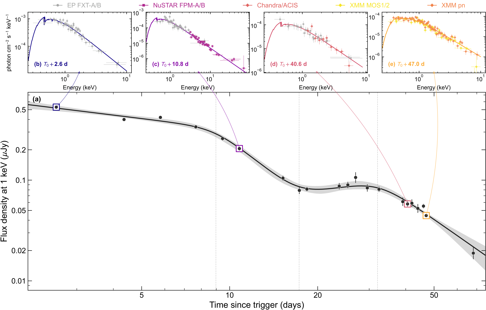
图注：X-ray observations of GRB 260310A. \(\textbf{a.}\) 1 keV flux density light curve fitted with a four-segment smoothly broken power-law model (black solid line) and the associated 95\% confidence region (gray shaded area). Vertical dashed lines indicate the break times. Detailed spectral views of four representative epochs: (\textbf{b}) $T_0 + 2.6$ d (the initial EP/FXT epoch), (\textbf{c}) $T_0 + 10.8$ d (the first NuSTAR epoch with quasi-simultaneous FXT observations), (\textbf{d}) $T_0 + 40.9$ d (the \(\textit{Chandra}\) epoch with quasi-simultaneous FXT observations), and (\textbf{e}) $T_0 + 47$ d (the \(\textit{XMM-Newton}\) epoch). The first six epochs (Interval 1) and the remaining epochs are joint-fitted using a tied intrinsic absorption and a shared photon index within each respective interval. Solid lines in the spectral panels illustrate the best-fit model for each epoch. Spectral fitting was performed on data grouped to $\ge 1$ count per bin using $C$-statistic and data are rebinned for display purposes.
对应解读：“建议重点查看的图表”第3项和“关键图表逐图导读”中X射线长期光变与谱演化图；也对应模型拟合段落关于晚期X射线再增亮和无谱演化的讨论。
入选理由：该图直接展示1 keV X射线长期光变、四段平滑断裂幂律拟合、95%置信区间和多个代表历元的谱拟合，是判断再增亮起止时间、幅度、统计可信度以及是否存在谱演化的核心证据。相比单纯位置图或样本比较图，它更直接支撑论文最具判别力的晚期再增亮结论。
来源与置信度：\(arxiv_source\)；high；\(arxiv_source\) / main.tex:figure[2]
Fig06
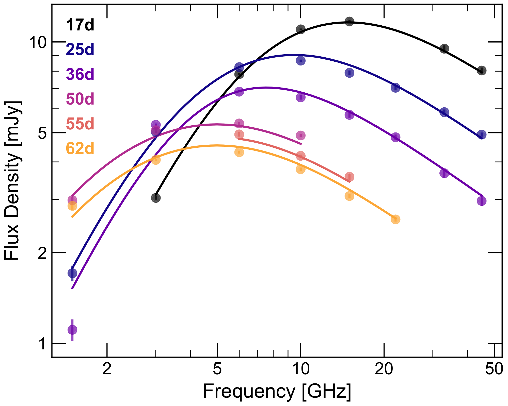
图注：Radio spectral energy distributions (SEDs) of GRB~260310A at five epochs ($T_0+$17, 25, 36, 50, 55 and 62~d, color-coded from dark to light). Solid curves are the best fit SEDs assuming a smoothness parameter $s=2$.
对应解读：“建议重点查看的图表”第4项和“关键图表逐图导读”中的多历元射电SED；也对应模型拟合段落关于正向激波与反向激波并存的诊断。
入选理由：该图以多个历元的射电SED和最佳拟合曲线展示谱峰随时间演化，是检验同步辐射、自吸收以及单一成分是否不足的关键图。它直接支撑摘要中“射电SED需要正向激波和反向激波”的核心物理解释。
来源与置信度：\(arxiv_source\)；high；\(arxiv_source\) / main.tex:figure[6]
Fig04
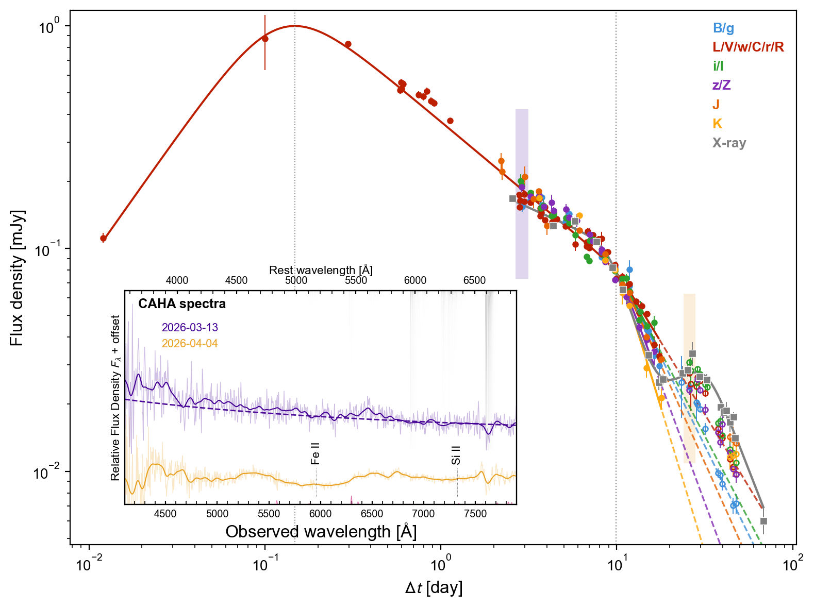
图注：Multi-color optical and nIR lightcurves of GRB230610A, compared to the X-ray lightcurve (gray squares). Data were rescaled to the $R$ band. The red solid line shows the best fit temporal model, describing the early optical data. Dashed lines show the late-time decay in different colors. Vertical bars mark the two epochs of optical spectroscopy. \(\textit{Inset:}\) CAHA spectra observed on March 13 and April 4, 2026, corrected for Galactic extinction. To guide the eye, the dashed line shows a power-law spectrum with slope 0.9. The observed spectra are plotted as semi-transparent lines, with smoothed solid lines for plotting purposes. Smoothing is performed using a Gaussian kernel with a standard deviation of 5 pixels. Wavelengths affected by telluric absorption and sky emission are marked by gray and pink areas, respectively \(\citep{Lord1992}.\)
对应解读：“建议重点查看的图表”第2项和“关键图表逐图导读”中的早期光学光变拟合图。
入选理由：该图给出多色光学/nIR光变并重标到R波段，包含早期光学最佳拟合时间模型，可用于检查约0.1 d迟到峰值和缓慢上升是否由多点数据支持。它是离轴喷流解释中“余辉延迟起峰”的主要观测依据。
来源与置信度：\(arxiv_source\)；high；\(arxiv_source\) / main.tex:figure[4]
Fig08
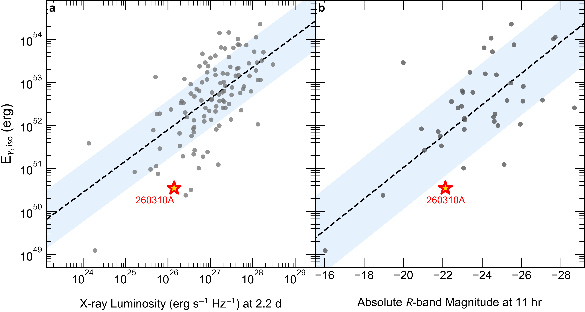
图注：Afterglow rest-frame X-ray luminosity at rest-frame 2.2 d (\textbf{a}) and $R$-band absolute magnitude $M_R$ at rest-frame 11 hr (\textbf{b}) versus 10–1000 keV prompt emission isotropic-equivalent energy for a sample of GRBs detected by \(\textit{Fermi}/GBM.\) Filled symbols in the right panel denote interpolated values, while open symbols denote extrapolated predictions. The red-edged star highlights GRB\,260310A. Black dashed lines and shaded area represent the best-fit log-linear correlations and the corresponding 1$\sigma$ bands.
对应解读：“建议重点查看的图表”第1项和“关键图表逐图导读”中关于瞬时辐射能量与余辉亮度关系的比较图。
入选理由：该图直接把GRB 260310A放在余辉亮度与10–1000 keV瞬时各向同性能量的关系平面上，显示其低Eγ,iso但高X射线/光学余辉亮度的异常位置。它比单独的光变图更适合支撑日报中“弱瞬时辐射与极亮余辉同时成立”的总体判断。
来源与置信度：\(arxiv_source\)；high；\(arxiv_source\) / main.tex:figure[8]
Fig11
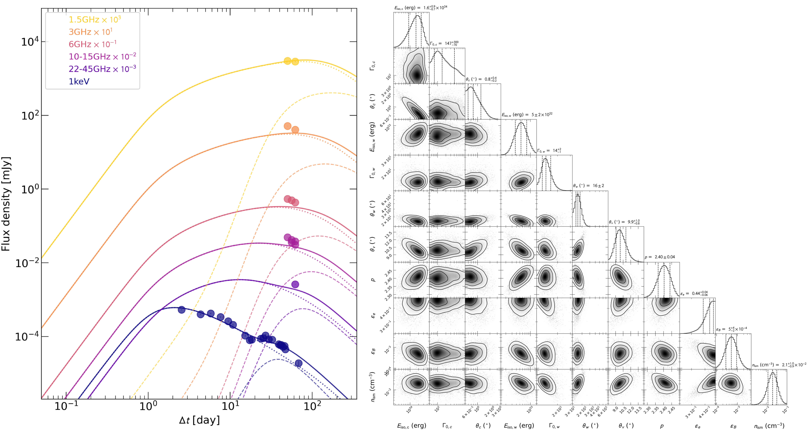
图注：Left: Multi-wavelength light curves of GRB 260310A together with the best-fit forward shock emission from the two-component jet in an ISM environment, adopted to describe the X-ray and late radio data. In this scenario, the early optical and radio emission are dominated by a RS and are treated as upper limits in the fit. Right: Posterior distributions of the model parameters. The median values and corresponding 1$\sigma$ uncertainties are indicated above the one-dimensional marginalized histograms.
对应解读：“建议重点查看的图表”第5和第7项，以及“关键图表逐图导读”中喷流模型比较、双成分喷流和参数后验的讨论。
入选理由：该图展示双成分喷流正向激波模型对多波段光变的拟合，并给出参数后验分布，直接对应晚期X射线和晚期射电数据的模型解释。它比一般观测概览更能帮助读者判断窄核心或双成分喷流是否能解释再增亮以及模型参数是否极端。
来源与置信度：\(arxiv_source\)；high；\(arxiv_source\) / main.tex:figure[11]
Fig05
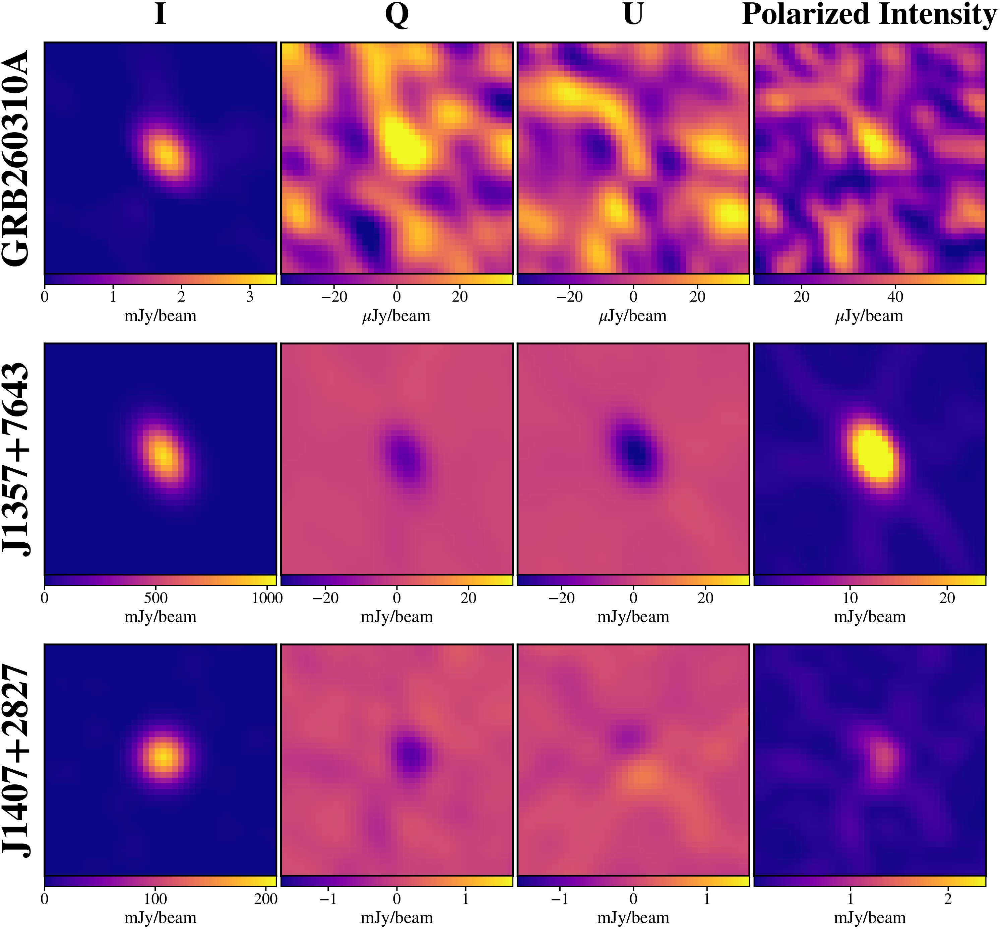
图注：Stokes $IQU$ images and linear polarization map for the target GRB 260310A (top), the phase calibrator J+1357 (middle) and the leakage term calibrator J+1407 (bottom). The field was imaged at $T_0+$55 d in the Ku-band.
对应解读：“建议重点查看的图表”第6项和“关键图表逐图导读”中的15 GHz、T0+55 d偏振测量。
入选理由：该图给出目标源、相位校准源和泄漏校准源的Stokes IQU图像及线偏振图，是检查低偏振度Π≈1.7%、仪器泄漏校正和系统误差的主要图像证据。虽然它不如光变和SED图直接约束喷流动力学，但对晚期正向激波主导和磁场有序程度的解释不可或缺。
来源与置信度：\(arxiv_source\)；high；\(arxiv_source\) / main.tex:figure[5]
强相关工作
这篇工作最直接的参照系是离轴喷流和结构化喷流余辉研究，尤其是 GRB 170817A 的射电到 X 射线缓慢上升余辉。不同之处在于 GRB 260310A 是长暴并伴随宽线 Ic 型超新星，且余辉非常明亮、早期光学峰值更早，因此它连接了经典长暴余辉和离轴几何问题。建议检索关键词包括 “off-axis GRB afterglow”, “structured jet”, “reverse shock radio afterglow”, “GRB 170817A afterglow”, “low luminosity gamma-ray burst”。
另一个相关方向是低亮度长暴和超新星关联 GRB，例如 GRB 980425、GRB 060218、GRB 100316D 以及更常规但近邻的 GRB-SN 事件。GRB 260310A 的意义在于，它提醒我们低 \(E_{\gamma,{\rm iso}}\) 不一定代表低能爆炸，可能是视角效应或喷流结构造成。相反观点或张力主要来自能量注入、密度跃迁、微物理参数演化等非几何解释；这些模型也可能产生再增亮，但要同时满足无谱演化、射电 SED 和偏振约束。建议检索关键词包括 “GRB afterglow rebrightening energy injection”, “density jump afterglow”, “two-component jet GRB”, “GRB supernova broad-lined Ic”。
相似工作：
- https://arxiv.org/abs/2605.23818
- https://arxiv.org/abs/1710.05832
- https://arxiv.org/abs/1806.09693
- https://arxiv.org/abs/1810.12972
基础理论 / 方法工作：
- https://ui.adsabs.harvard.edu/abs/1997ApJ...476..232M/abstract
- https://ui.adsabs.harvard.edu/abs/1998ApJ...497L..17S/abstract
- https://ui.adsabs.harvard.edu/abs/1999ApJ...510..683S/abstract
- https://ui.adsabs.harvard.edu/abs/1999Natur.398..389S/abstract
相反观点 / 张力线索：
- https://ui.adsabs.harvard.edu/abs/2003ApJ...586.1202N/abstract
- https://ui.adsabs.harvard.edu/abs/2003ApJ...591L..17G/abstract
4. Hydrodynamic model of nonthermal emission from the Fermi bubbles
- 来源：arXiv / astro-ph.HE
- 链接：https://arxiv.org/abs/2605.23741v1
- 作者：V. A. Dogiel, D. O. Chernyshov, T. S. Fatekhov, A. M. Kiselev, C. M. Ko
- 评分：novelty 7/10，importance 7/10，relevance 10/10，final 9.05/10
- 推荐理由：直接讨论Fermi bubbles的非热微波/伽马辐射和宇宙线电子TeV加速，提出Rayleigh-Taylor湍动随机加速替代弱激波模型，和银河中心高能伽马/宇宙线主题高度相关。
中文题目：费米泡非热辐射的流体动力学模型：晚期壳层中 Rayleigh-Taylor 不稳定性驱动的宇宙线电子加速
做了什么：这篇文章讨论银河系中心上方和下方约数千秒差距尺度的费米泡如何产生微波和伽马射线非热辐射。作者接受一个已有图像：中央黑洞长期、间歇性吞噬恒星释放能量，在银河晕中吹出泡状壳层；但他们指出，泡壳晚期激波的马赫数可能太低，难以用标准强激波加速直接解释观测到的高能电子。文章提出替代机制：泡壳中的 Rayleigh-Taylor 不稳定性产生磁流体湍动，电子在这些涨落中随机加速，可在不要求强激波的条件下达到解释微波同步辐射和伽马射线辐射所需的高能段。
为什么重要：费米泡是银河系中心反馈、宇宙线输运和银河晕等离子体物理交汇处的关键对象。若非热电子主要不是由强激波产生，而是在泡壳晚期由 Rayleigh-Taylor 不稳定性原位加速，那么我们对银河中心能量注入历史、泡壳动力学年龄、宇宙线扩散和泡边缘锐利结构的解释都会改变。
理论 / 观测 / 仪器方法价值：这项工作的价值在于把流体不稳定性、磁流体湍动谱和宇宙线随机加速时间尺度联系起来，为弱激波情形下的费米泡非热辐射提供了可检验的物理通道。它对理论建模有价值，也对未来用伽马射线、微波偏振和 X 射线泡壳诊断湍动强度、磁场和电子谱有启发。
为什么应该关注：如果你关心银河中心反馈是否类似低功率活动星系核外流、费米泡边缘为何明亮且锐利、或者 TeV 电子如何在冷却时间有限的银河晕中存在，这篇文章值得看。它提醒我们：把费米泡简单归因于一次强激波事件可能过窄，泡壳内部晚期不稳定性也可能是非热粒子的主要能量来源。
展开详细解读：文章讲解、背景、理论、重点章节、图表与相关工作
文章详细讲解
科学问题：费米泡在银河中心两侧延伸到约 \(7\text{--}8\,\mathrm{kpc}\) 的高度，在 \(\gamma\) 射线和微波波段都表现出非热辐射。一个核心问题是：产生这些辐射的相对论电子从哪里来？如果电子是在银河中心注入后被输运到高纬度，它们必须在同步辐射和逆康普顿冷却之前到达泡顶；如果电子在泡壳原位产生，就需要说明局部加速机制。传统解释常诉诸泡边缘激波的扩散激波加速，但这篇文章强调，在费米泡演化晚期，泡壳激波马赫数可能不够高，难以自然产生所需的硬电子谱和高能截止。
作者怎么做：作者从一个流体动力学图像出发，假设银河中心黑洞长期通过常规恒星俘获释放能量，驱动热等离子体向银河晕膨胀并形成泡壳。随着泡壳进入晚期，壳层与外部晕气体之间的加速度、密度分层和界面扰动会激发 Rayleigh-Taylor 不稳定性。作者重点不是重新发现费米泡形态，而是估计这些不稳定性如何生成磁流体涨落，并进一步由这些涨落随机加速宇宙线电子。文章推导 Rayleigh-Taylor 模式谱，估计磁流体涨落的动力学方程，并把涨落谱带入电子加速时间尺度的估算。
关键结果：文章的主要结论是，Rayleigh-Taylor 不稳定性可在泡壳中提供足够的湍动能量密度和合适的波数范围，使宇宙线电子在晚期泡壳内被随机加速到 \(\mathrm{TeV}\) 量级。这一点很关键，因为 \(\mathrm{TeV}\) 电子通过逆康普顿散射星光、红外光和宇宙微波背景可产生 \(\mathrm{GeV}\) 到更高能段的 \(\gamma\) 射线，同时通过微高斯量级磁场中的同步辐射产生微波 haze。该机制不需要强激波，因此可缓解弱马赫数泡壳与强非热辐射之间的张力。
局限和下一步：这类模型的瓶颈在于不稳定性谱、磁场强度、湍动级联、粒子逃逸和辐射损失之间存在强退化。Rayleigh-Taylor 模式能否在真实三维磁化、黏滞、各向异性传导和宇宙线反馈存在时保持足够效率，需要数值模拟进一步检验。下一步最有用的观测约束包括：泡边缘微波偏振与磁场有序度、X 射线壳层温度和密度跳变、\(\gamma\) 射线谱在不同纬度的截止形状，以及是否存在随高度变化的电子谱硬化或软化。
背景知识
费米泡是 Fermi-LAT 在银河中心上下发现的大尺度 \(\gamma\) 射线结构，形态近似双叶，边界相对锐利，纬向延伸到高银纬区域。它们还与 WMAP 和 Planck 看到的微波 haze、ROSAT 和 eROSITA 看到的软 X 射线结构存在空间关联。由于尺度达到千秒差距，费米泡通常被视为银河中心过去能量注入的遗迹，可能来自中央超大质量黑洞活动、核区恒星形成风，或两者混合。
历史上关于费米泡的争论主要集中在两类辐射起源：轻子模型和强子模型。轻子模型认为 \(\gamma\) 射线主要由高能电子逆康普顿散射产生，微波由同一批电子同步辐射产生；强子模型认为 \(\gamma\) 射线主要来自宇宙线质子与气体碰撞产生的 \(\pi^0\) 衰变。轻子模型的难点是电子冷却快，需要快速输运或原位加速；强子模型的难点是需要足够长的质子禁闭时间和合适的气体密度分布。
激波加速是最直观的原位加速机制：外流膨胀在银河晕中形成激波，粒子反复穿越激波获得能量。但如果晚期泡壳速度不高、声速较大或热晕温度较高，激波马赫数会偏低。弱激波通常给出较软的粒子谱和较低的加速效率，很难单独解释费米泡边缘显著的非热辐射。因此，不依赖强激波的加速机制，例如湍动随机加速、磁重联或流体不稳定性驱动加速，成为值得重看的方向。
现在重新审视这一问题有两个原因。第一，全天高能巡天和微波偏振数据已经足以区分某些形态和谱梯度，例如泡边缘是否比内部更硬、是否存在能量相关扩散痕迹。第二，银河中心反馈的多相介质模拟已经显示，泡壳界面很容易发展 Kelvin-Helmholtz 和 Rayleigh-Taylor 类不稳定性，真实泡壳并非光滑薄壳。常见误区是把费米泡理解成单一瞬时爆炸的简单 Sedov 解，或把微波和 \(\gamma\) 射线的一致性自动等同于同一空间位置、同一电子谱；实际上投影效应、背景扣除和不同辐射场都可能改变这种直觉。
基础理论 / 方法脉络
基本物理图像是一个受银河中心能量注入驱动的热泡在银河晕中膨胀。热泡内部压强高于外部晕气体，推动外层气体形成壳层。早期膨胀可能有较强激波；晚期随着泡半径增大、速度下降，激波减弱，而界面在重力、减速和密度反差作用下可能变得不稳定。Rayleigh-Taylor 不稳定性本质上是轻流体支撑重流体或界面受到等效反向加速度时，扰动从势能中取能并增长。
在磁化等离子体中，Rayleigh-Taylor 不稳定性不会只产生流体涡旋，还会弯曲、拉伸和扰动磁场，形成磁流体涨落。对宇宙线电子而言，这些涨落相当于运动的散射中心。电子多次与随机运动的磁扰动相互作用，每次能量变化较小，但累积后形成二阶费米加速或随机加速。其效率取决于湍动速度、涨落谱、粒子回旋半径、散射平均自由程和逃逸时间。
本文的关键假设是：费米泡壳层中 Rayleigh-Taylor 不稳定性在晚期足够活跃，能把壳层流体动能的一部分转化为磁流体湍动；这些湍动的波数范围与目标电子的回旋尺度存在共振或近似有效耦合；电子在辐射冷却前可被加速到产生观测微波和 \(\gamma\) 射线所需的能量。这里的核心量包括电子能量 \(E\)、磁场 \(B\)、湍动能量密度 \(W(k)\)、加速时间 \(t_{\rm acc}\)、同步和逆康普顿冷却时间 \(t_{\rm loss}\)。
观测上，微波同步辐射主要约束 \(B\) 与电子谱在 \(\mathrm{GeV}\) 到 \(\mathrm{TeV}\) 区间的组合；\(\gamma\) 射线逆康普顿辐射则约束电子谱与星光、红外和宇宙微波背景辐射场的组合。二者联合可以打破部分退化，但并不完全：较强的 \(B\) 可用较少电子解释微波，却会增强同步冷却；较强辐射场可用较少电子解释 \(\gamma\) 射线；背景扣除和泡边界选择也会影响谱形。理论上还存在湍动级联谱指数、逃逸边界条件和低能种子电子来源的退化。
公式与推导
第一步是泡壳动力学的能量尺度。若银河中心向热泡累计注入能量 \(E_{\rm inj}\)，泡体积为 \(V\)，内部压强量级可写为
其中 \(P_{\rm b}\) 是泡内热压强，\(\gamma_{\rm ad}\) 是绝热指数，\(E_{\rm th}\) 是热能。这个关系给出泡壳膨胀的压强来源，也决定界面受到的等效加速度。
第二步是薄壳受力的量级估计。若壳层面密度为 \(\Sigma\)，外部压强为 \(P_{\rm h}\)，则界面法向加速度可近似为
其中 \(g_{\rm eff}\) 是驱动不稳定性的等效加速度，\(g_{\rm gal}\) 是银河引力加速度，\(v_{\rm sh}\) 是壳层速度。符号方向取决于界面定义；关键是密度界面在等效加速度下是否处于不稳定构型。
第三步是 Rayleigh-Taylor 线性增长率。对两个不可压流体界面，忽略磁场和表面张力时，波数为 \(k\) 的扰动增长率为
其中 \(A\) 是 Atwood 数，\(\rho_1\) 和 \(\rho_2\) 是界面两侧密度。若 \(Akg_{\rm eff}>0\)，扰动指数增长，增长时间为 \(t_{\rm RT}\sim \omega_{\rm RT}^{-1}\)。
第四步加入磁场张力的稳定化作用。若扰动波矢沿界面磁场分量为 \(B_\parallel\)，一个常用的量级形式是
其中第二项代表磁张力抑制短波扰动。该式说明并非所有尺度都增长，只有满足浮力驱动超过磁张力的模式才能向湍动注能。
第五步把不稳定性注入转化为磁流体涨落谱。若 \(W(k,t)\) 表示单位波数的湍动能量密度，可写成示意性的谱演化方程
其中 \(\Gamma_{\rm RT}\) 是不稳定性增长率，\(\Pi\) 是级联通量，\(\Gamma_{\rm damp}\) 是阻尼率，\(Q(k)\) 是外部注入项。本文关心的正是这些涨落是否足以提供电子加速所需的散射中心。
第六步连接粒子回旋尺度与湍动波数。相对论电子的拉莫尔半径为
其中 \(p\) 是动量，\(E\) 是电子能量，\(e\) 是元电荷，\(B\) 是磁场强度。准线性共振要求 \(k_{\rm res}r_{\rm L}\sim 1\)，因此 \(\mathrm{TeV}\) 电子主要采样特定小尺度磁扰动。
第七步估计随机加速。若动量扩散系数为 \(D_{pp}\)，随机加速时间可定义为
在散射中心速度为 \(v_{\rm turb}\)、空间扩散系数为 \(D_{xx}\) 的二阶费米近似中，常见量级关系是
这表明湍动越强、散射越频繁，\(t_{\rm acc}\) 越短。
第八步加入辐射损失。高能电子的同步和逆康普顿损失可写为
其中 \(\sigma_{\rm T}\) 是 Thomson 截面，\(\gamma\) 是电子洛伦兹因子，\(U_B\) 是磁场能量密度，\(U_{\rm rad}\) 是辐射场能量密度。最高能量由 \(t_{\rm acc}(E)=t_{\rm loss}(E)\) 近似决定。
第九步连接到可观测辐射。同步辐射特征频率和逆康普顿光子能量分别满足
其中 \(m_e\) 是电子质量，\(\epsilon_{\rm ph}\) 是靶光子能量。该式说明同一批 \(\gamma\sim 10^4\text{--}10^6\) 的电子可同时约束微波 haze 和 \(\gamma\) 射线泡谱，是检验本文模型的观测桥梁。
模型拟合 / 应用方法
这类工作的拟合目标通常不是单一光变曲线，而是多波段空间和能谱联合约束。需要拟合或扫描的物理量包括泡壳年龄、能量注入率、壳层密度、磁场强度 \(B\)、湍动谱 \(W(k)\)、电子注入谱、随机加速时间 \(t_{\rm acc}\)、逃逸时间 \(t_{\rm esc}\) 和辐射场能量密度 \(U_{\rm rad}\)。如果文章以解析或半解析估算为主，读者应把它理解为参数可行性论证，而不是唯一最佳拟合。
统计上，观测拟合可以从电子输运方程出发，求得稳态或时变电子分布 \(N(E,\mathbf{r})\)，再前向计算同步辐射和逆康普顿辐射，与微波和 \(\gamma\) 射线强度图比较。对 \(\gamma\) 射线数据，常见似然是按能量和天区分箱的 Poisson 似然；对微波图，常见问题是前景模板扣除残差并不独立，因此协方差矩阵和系统误差比形式统计误差更重要。
主要退化关系有三类。第一是 \(B\) 与电子归一化退化：增强 \(B\) 会提高同步辐射，但不等比例提高逆康普顿，因此微波与 \(\gamma\) 射线联合可部分破除。第二是湍动强度与逃逸时间退化：强湍动既可加速粒子，也可限制扩散，二者都会改变高能电子保留量。第三是泡壳几何与背景扣除退化：边缘增强可能来自真实壳层辐射，也可能来自投影路径长度增加或模板残差。
残差诊断应重点看能量相关形态，而不只是总谱是否相符。如果模型正确，泡边缘的高能 \(\gamma\) 射线谱、微波偏振结构和 X 射线壳层应在空间上存在可解释的对应关系。若模型需要极端高的湍动能量密度、过强磁场、或要求电子加速时间明显短于任何合理的 Rayleigh-Taylor 增长时间，就说明参数空间可能不物理。
模型可能失败的地方也很明确。磁场张力可能抑制关键短波 Rayleigh-Taylor 模式；各向异性热传导和黏滞可能改变壳层结构；三维湍动级联可能把能量送到非共振尺度；电子低能种子群体可能不足；或者观测到的 \(\gamma\) 射线其实有显著强子成分。实际应用中，最稳健的做法是把本文机制作为电子原位加速模块，嵌入三维磁流体和宇宙线输运模拟，再与多波段模板拟合联合检验。
重点章节 / 结果段落怎么读
数据和现象动机部分：读者应先确认作者采用的费米泡基本尺度、辐射波段和非热电子解释。重点看他们如何陈述强激波模型的困难，特别是泡壳晚期马赫数不足与观测非热辐射强度之间的矛盾。
流体动力学模型部分：这里应看能量注入来源、泡壳高度、壳层演化阶段和外部银河晕参数。作者假设中央黑洞常规俘获恒星提供长期能量释放，这一假设决定泡的年龄、速度和晚期不稳定性条件。
Rayleigh-Taylor 不稳定性推导部分：这是论文核心。读者应检查不稳定性增长率、允许增长的波数范围、磁场或几何修正，以及这些模式如何向磁流体涨落注能。特别要注意短波端是否被磁张力、黏滞或有限壳厚截断。
宇宙线电子加速部分：应重点看作者如何从涨落谱估计动量扩散系数和加速时间，并与电子同步和逆康普顿损失时间比较。只要 \(t_{\rm acc}\) 在目标能量处小于或接近 \(t_{\rm loss}\)，模型才有解释微波和 \(\gamma\) 射线的基础。
讨论和结论部分：读者应关注作者是否给出与激波加速模型的可观测区别，例如边缘谱形、空间分布、湍动或磁场诊断。若论文没有完整前向拟合观测图像，也应把结论理解为机制可行性而非已被观测唯一验证。
建议重点查看的图表
- 费米泡几何或流体动力学示意图：看泡壳高度、厚度、银河中心位置和壳层晚期状态，判断模型是否确实针对边缘壳层而非整个泡体。
- 壳层速度、半径或马赫数随时间变化的图：关键是晚期 \(\mathcal{M}\) 是否降到不足以强激波加速，从而支持作者转向 Rayleigh-Taylor 加速的动机。
- Rayleigh-Taylor 增长率或不稳定模式谱：看横轴波数 \(k\) 或尺度，纵轴增长率 \(\Gamma_{\rm RT}\)，尤其是哪些尺度增长最快以及磁场是否切掉短波。
- 磁流体湍动谱 \(W(k)\)：看能量是否集中在能与 \(\mathrm{GeV}\) 到 \(\mathrm{TeV}\) 电子共振的波数范围，谱斜率对加速时间影响很大。
- 电子加速时间与损失时间比较图：最关键是 \(t_{\rm acc}(E)\) 与 \(t_{\rm loss}(E)\) 的交点是否达到 \(\mathrm{TeV}\) 附近。
- 电子谱或预期辐射谱：看模型是否同时覆盖微波同步辐射和 \(\gamma\) 射线逆康普顿辐射，而不是只调到其中一个波段。
- 参数敏感性或稳健性表：检查磁场、密度、湍动效率和泡龄改变后，结论是否仍成立。
关键图表逐图导读
图 1：若论文给出费米泡壳层结构示意或流体演化图，横纵轴通常对应银河坐标或物理尺度。读图时要区分泡内部、接触间断面、外部激波和发射壳层。陷阱是把投影边缘亮化误认为体发射增强；需要看作者假设非热电子集中在壳层还是填充整个泡。
图 2：若有壳层动力学演化图，横轴多为时间或泡半径，纵轴可能是速度、马赫数或压强。主要结论应是晚期激波变弱，\(\mathcal{M}\) 不足以高效扩散激波加速。读图陷阱是声速取决于银河晕温度，若外晕温度或速度估计改变，\(\mathcal{M}\) 的判断会随之变化。
图 3：Rayleigh-Taylor 增长率图通常以波数 \(k\) 或扰动尺度为横轴，以 \(\Gamma_{\rm RT}\) 或增长时间为纵轴。应检查是否存在足够宽的增长波段，以及最快增长尺度是否小于壳厚且大于耗散尺度。若图中没有磁场抑制项或黏滞截断，读者应谨慎外推到小尺度。
图 4：湍动谱或磁流体涨落能量图应显示 \(W(k)\) 随 \(k\) 的变化。要看模型线是否覆盖与电子回旋半径满足 \(k_{\rm res}r_{\rm L}\sim 1\) 的区域。陷阱是总湍动能量足够并不代表共振尺度能量足够；加速效率取决于局部谱能量。
图 5：加速时间和损失时间比较图最直接检验模型。横轴通常为电子能量 \(E\)，纵轴为时间尺度；若 \(t_{\rm acc}\) 低于 \(t_{\rm loss}\) 直到 \(\mathrm{TeV}\) 能量，模型可行。若交点只在较低能量，微波可解释但高能 \(\gamma\) 射线可能困难。
图 6：辐射谱图若存在，横轴为频率或光子能量，纵轴为能量通量或强度。同步分量应对应微波，逆康普顿分量对应 \(\gamma\) 射线。读图时要看误差带是否包含前景扣除系统误差，不能只看模型曲线穿过若干数据点。
论文原图 / 可嵌入图片
（未提供 verified figure；为避免编造图片链接，本节只在能确认官方图片 URL 或成功提取论文原图时嵌入图片。）
强相关工作
这篇工作与费米泡发现论文、微波 haze 研究、银河中心活动星系核式爆发模型、核星暴风模型和强子模型都有关。最直接的比较对象是基于强激波扩散加速的轻子模型：它们通常把泡边缘视为加速面，而本文把晚期壳层中的 Rayleigh-Taylor 湍动作为主要加速源。建议检索关键词包括 “Fermi bubbles leptonic model shock acceleration”, “Fermi bubbles microwave haze inverse Compton”, “Rayleigh-Taylor instability cosmic ray acceleration”, “Galactic center outflow MHD turbulence”。
与强子模型相比，本文仍属于轻子方向，因为它关注相对论电子产生微波同步辐射和 \(\gamma\) 射线逆康普顿辐射。强子模型的优势是质子冷却时间长，容易保存大尺度结构；但它对气体密度和宇宙线禁闭有要求。本文机制若成立，可缓解轻子模型的电子冷却难题，因为电子在泡壳内原位加速，而不必全部从银河中心快速输运到高纬度。相反观点或潜在张力包括：费米泡 \(\gamma\) 射线谱是否需要强子成分、泡边缘是否真的有足够湍动、以及 Rayleigh-Taylor 不稳定性是否会破坏观测到的锐利边界。
相似工作：
- https://arxiv.org/abs/2605.23741
- https://arxiv.org/abs/1005.5480
基础理论 / 方法工作：
- https://arxiv.org/abs/1005.5480
- https://arxiv.org/abs/1103.0055
相反观点 / 张力线索：
（未提供）
说明
评分由 LLM 给出初评，再由本地阈值策略过滤；IACT、TeV 伽马射线和高能中微子天文学按重点方向处理。